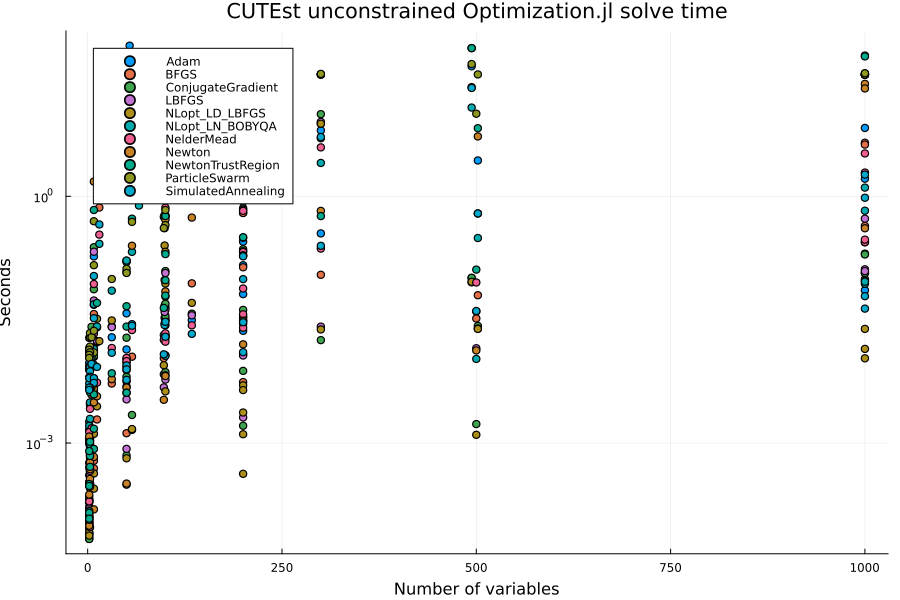
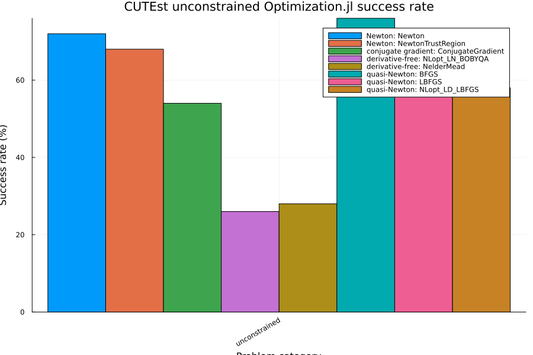
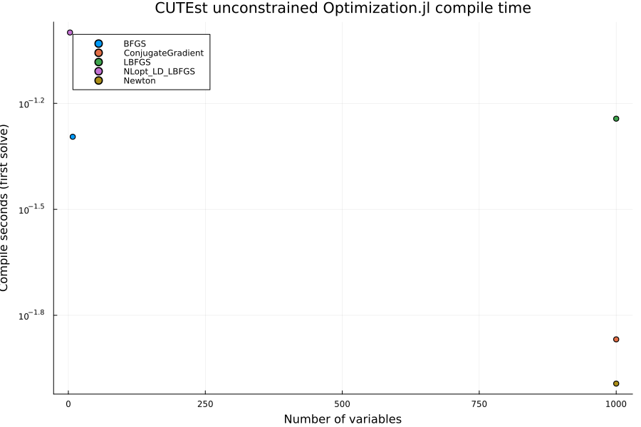
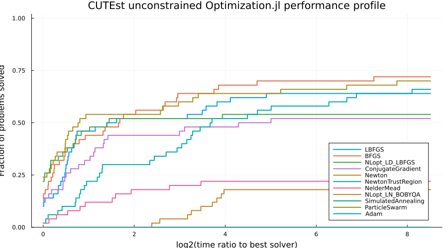
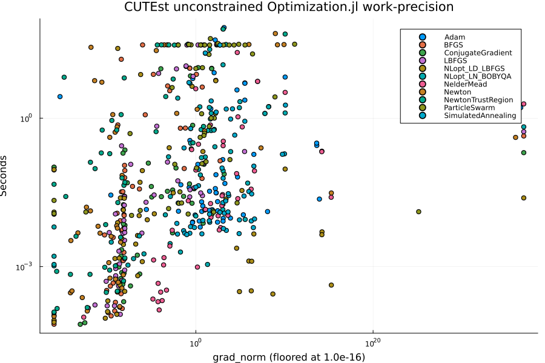

CUTEst Unconstrained Optimization.jl Benchmarks
This benchmark runs unconstrained problems from the CUTEst test set through the Optimization.jl interface using OptimizationNLPModels. The problem class is selected with CUTEst.select_sif_problems(contype = "unc"), i.e. problems with no constraints and no variable bounds.
All four CUTEst pages in this folder (CUTEst_unconstrained, CUTEst_bounded, CUTEst_unbounded, CUTEst_quadratic) share the harness in cutest_benchmark_utils.jl, which defines the selection constants, the solver constructors, the run loop, and the summary and plotting helpers. The prose below describes the harness as it stands on this page; refinements to the solver sets, solution-quality metrics, performance profiles, problem selection, and timing methodology are tracked in SciMLBenchmarks#1857.
This page supersedes the former CUTEst_safe_solvers.jmd, which was removed in #1594. That page ran the same contype = "unc" problem set with a three-solver subset (LBFGS, ConjugateGradient, NelderMead) of the solvers used here and a copy of the run loop, so it duplicated this page with less coverage and was dropped when the pages were consolidated onto the shared harness.
Setup
Solvers are grouped by class. Local convergence-based methods (quasi-Newton LBFGS, BFGS, NLopt LD_LBFGS; ConjugateGradient; Newton and NewtonTrustRegion using the NLPModels Hessian; derivative-free NelderMead and NLopt LN_BOBYQA) report success through their return code. The global heuristics SimulatedAnnealing and ParticleSwarm run until maxiters and the Optimisers.jl rule Adam takes exactly maxiters gradient steps; neither signals convergence, so they are summarized separately with completion rate and time only and are excluded from the success-rate plot. Every solve on this page is capped at unconstrained_timeout_seconds, which is tighter than the shared default so that the larger solver set keeps a bounded worst-case runtime.
ENV["GKSwstype"] = "100"
using CUTEst
using DataFrames
using Plots
using StatsPlots
using StatsBase: countmap
using Statistics
using Printf
include(joinpath(isdefined(Main, :WEAVE_ARGS) ? WEAVE_ARGS[:folder] : @__DIR__,
"cutest_benchmark_utils.jl"))plot_work_precision (generic function with 1 method)Problem selection
select_safe_problems sorts candidate names, filters the measured skip map and size limits, then selects up to max_problems across the 1–10, 11–100, and 101–max_var variable buckets. It samples each name-sorted bucket evenly, redistributing quotas when a bucket has fewer candidates. Size strata come from CUTEst's public selection filters. The selected and eligible counts are printed per bucket. This page sets max_con = 0 because its problems are unconstrained.
println("MAX_PROBLEMS_PER_CATEGORY = ", MAX_PROBLEMS_PER_CATEGORY)
println("MAX_NVAR = ", MAX_NVAR)
println("SOLVE_MAXITERS = ", SOLVE_MAXITERS)
println("SOLVE_TIMEOUT_SECONDS = ", SOLVE_TIMEOUT_SECONDS)
println("KNOWN_BAD_PROBLEMS = ", join(sort(collect(keys(KNOWN_BAD_PROBLEMS))), ", "))
unconstrained_candidates = collect(
CUTEst.select_sif_problems(contype = "unc", max_var = MAX_NVAR, max_con = 0),
)
unconstrained_problems = select_safe_problems(
unconstrained_candidates;
max_var = MAX_NVAR,
max_con = 0,
)
println("Selected unconstrained problems: ", length(unconstrained_problems))
println(join(unconstrained_problems, ", "))
_, unconstrained_size_buckets = classification_buckets(
MAX_NVAR, 0, NVAR_BUCKET_EDGES,
)
selected_size_buckets = zeros(Int, length(NVAR_BUCKET_EDGES) + 1)
for name in unconstrained_problems
bucket = get(unconstrained_size_buckets, uppercase(name), 0)
@assert bucket > 0 "selected problem $name is absent from CUTEst variable-count filters"
selected_size_buckets[bucket] += 1
end
@assert all(>(0), selected_size_buckets) "unconstrained selection must cover every variable-size bucket"
@assert select_safe_problems(reverse(unconstrained_candidates); max_var = MAX_NVAR, max_con = 0) ==
unconstrained_problems "selection must not depend on CUTEst candidate order"MAX_PROBLEMS_PER_CATEGORY = 50
MAX_NVAR = 1000
SOLVE_MAXITERS = 1000
SOLVE_TIMEOUT_SECONDS = 90.0
KNOWN_BAD_PROBLEMS =
Selected 50 of 198 eligible problems (selected/eligible per bucket): 1-10 v
ars: 17/134, 11-100 vars: 17/40, 101-1000 vars: 16/24
Selected unconstrained problems: 50
AKIVA, BRKMCC, CHWIRUT2LS, DENSCHNB, ECKERLE4LS, GAUSS2LS, HATFLDD, HILBERT
A, JUDGE, LSC1LS, MGH17LS, PALMER1C, PALMER8C, RECIPELS, SNAIL, VESUVIALS,
ZANGWIL2, BA-L1LS, CHNROSNB, DIAMON3DLS, DMN15103LS, DMN37142LS, ERRINROS,
HYDC20LS, LRCOVTYPE, LUKSAN11LS, LUKSAN14LS, LUKSAN16LS, LUKSAN22LS, METHAN
B8LS, PARKCH, SENSORS, TOINTQOR, WATSON, 10FOLDTRLS, ARGLINB, ARGLINC, BROW
NAL, COATING, EXTROSNB, FLETCHCR, INTEQNELS, KSSLS, LRW1A, LRW8A, MNISTS5LS
, OSCIPATH, PENALTY2, PENALTY3, VARDIM
Selected 50 of 198 eligible problems (selected/eligible per bucket): 1-10 v
ars: 17/134, 11-100 vars: 17/40, 101-1000 vars: 16/24Solvers
UNCONSTRAINED_SOLVERS lists eleven algorithms spanning Optim.jl (LBFGS, BFGS, ConjugateGradient, Newton, NewtonTrustRegion, NelderMead, SimulatedAnnealing, ParticleSwarm), NLopt (LD_LBFGS, LN_BOBYQA), and Optimisers.jl (Adam). Each is constructed with its default options. Gradients (and Hessians for the Newton class) come from the NLPModels interface, so derivative-based methods use CUTEst's analytic derivatives rather than finite differences. Adam is the exception: the Optimisers path needs an fg closure, which build_problem supplies from NLPModels.objgrad! for that class only. Every solve is called with maxiters = SOLVE_MAXITERS and maxtime = unconstrained_timeout_seconds (both timing runs of a pair share that cap). Budget-limited solvers are summarized separately from local convergence-based ones; see the Setup section.
Run
Each (problem, solver) pair is solved twice by run_single_solve after a per-solver warm-up: the first run measures wall-clock time including any remaining compilation (first_solve_secs, compile_secs), and the second run on a fresh OptimizationProblem is the primary secs metric. If the first run already hits MaxTime (or otherwise exceeds the page maxtime), the second run is skipped so a timed-out pair costs one cap, not two. A row also records solver_class, the return code as reported by Optimization.jl, and a status of OK when solve returned, FAILED when it threw, or LOAD_FAILED when the CUTEst problem could not be constructed. solver_reported_secs is sol.stats.time when the backend provides it. run_benchmarks errors if a category is degenerate (too few completed rows or a solver with zero completions), so a broken environment fails the build instead of producing an empty page.
# Worst case: 50 problems x 11 solvers x 30 s = 16,500 s, below the 22,500 s bound the
# previous 5-solver / 90 s configuration had.
unconstrained_timeout_seconds = 30.0
unc_results = run_benchmarks(
"unconstrained",
unconstrained_problems,
UNCONSTRAINED_SOLVERS;
maxtime = unconstrained_timeout_seconds,
)
display(unc_results)Warming up solvers (JIT), results are not benchmarked:
LBFGS ROSENBR OK Success first 4.212s compi
le 4.209s clean 0.000s (total 7.119s)
BFGS ROSENBR OK Success first 1.777s compi
le 1.775s clean 0.000s (total 2.099s)
NLopt_LD_LBFGS ROSENBR OK Success first 0.901s compi
le 0.892s clean 0.000s (total 1.219s)
ConjugateGradient ROSENBR OK Success first 1.857s compi
le 1.855s clean 0.000s (total 2.185s)
Newton ROSENBR OK Success first 3.505s compi
le 3.504s clean 0.001s (total 3.833s)
NewtonTrustRegion ROSENBR OK Success first 2.283s compi
le 2.281s clean 0.001s (total 2.613s)
NelderMead ROSENBR OK Success first 2.095s compi
le 2.094s clean 0.000s (total 2.413s)
NLopt_LN_BOBYQA ROSENBR OK Success first 0.002s compi
le 0.000s clean 0.002s (total 0.283s)
SimulatedAnnealing ROSENBR OK MaxIters first 0.814s comp
ile 0.810s clean 0.003s (total 1.133s)
ParticleSwarm ROSENBR OK MaxIters first 1.813s comp
ile 1.803s clean 0.009s (total 2.139s)
Adam ROSENBR OK Default first 3.782s compi
le 3.774s clean 0.008s (total 4.106s)
Running unconstrained benchmarks
Problems: 50
Solvers: LBFGS, BFGS, NLopt_LD_LBFGS, ConjugateGradient, Newton, NewtonTrus
tRegion, NelderMead, NLopt_LN_BOBYQA, SimulatedAnnealing, ParticleSwarm, Ad
am
Per-solve time cap: 30.0 s
LBFGS AKIVA OK Success 0.001s (first 0.00
1s, compile 0.000s, decode 0.414s)
BFGS AKIVA OK Success 0.000s (first 0.00
1s, compile 0.000s, decode 0.404s)
NLopt_LD_LBFGS AKIVA OK Success 0.000s (first 0.00
0s, compile 0.000s, decode 0.410s)
ConjugateGradient AKIVA OK Success 0.001s (first 0.00
1s, compile 0.000s, decode 0.387s)
Newton AKIVA OK Success 0.000s (first 0.00
1s, compile 0.000s, decode 0.410s)
NewtonTrustRegion AKIVA OK Success 0.000s (first 0.00
1s, compile 0.000s, decode 0.417s)
NelderMead AKIVA OK Success 0.000s (first 0.00
1s, compile 0.000s, decode 0.404s)
NLopt_LN_BOBYQA AKIVA OK Success 0.002s (first 0.00
2s, compile 0.000s, decode 0.407s)
SimulatedAnnealing AKIVA OK MaxIters 0.009s (first 0.0
08s, compile 0.000s, decode 0.400s)
ParticleSwarm AKIVA OK MaxIters 0.019s (first 0.0
19s, compile 0.000s, decode 0.401s)
Adam AKIVA OK Default 0.014s (first 0.01
6s, compile 0.000s, decode 0.414s)
LBFGS BRKMCC OK Success 0.000s (first 0.00
0s, compile 0.000s, decode 0.280s)
BFGS BRKMCC OK Success 0.000s (first 0.00
0s, compile 0.000s, decode 0.274s)
NLopt_LD_LBFGS BRKMCC OK Success 0.000s (first 0.00
0s, compile 0.000s, decode 0.278s)
ConjugateGradient BRKMCC OK Success 0.000s (first 0.00
0s, compile 0.000s, decode 0.274s)
Newton BRKMCC OK Success 0.000s (first 0.00
0s, compile 0.000s, decode 0.267s)
NewtonTrustRegion BRKMCC OK Success 0.000s (first 0.00
0s, compile 0.000s, decode 0.277s)
NelderMead BRKMCC OK Success 0.000s (first 0.00
0s, compile 0.000s, decode 0.282s)
NLopt_LN_BOBYQA BRKMCC OK Success 0.001s (first 0.00
1s, compile 0.000s, decode 0.279s)
SimulatedAnnealing BRKMCC OK MaxIters 0.005s (first 0.0
05s, compile 0.000s, decode 0.271s)
ParticleSwarm BRKMCC OK MaxIters 0.013s (first 0.0
47s, compile 0.000s, decode 0.281s)
Adam BRKMCC OK Default 0.011s (first 0.01
0s, compile 0.000s, decode 0.288s)
LBFGS CHWIRUT2LS OK Success 0.001s (first 0.00
1s, compile 0.000s, decode 0.284s)
BFGS CHWIRUT2LS OK Success 0.001s (first 0.00
1s, compile 0.000s, decode 0.292s)
NLopt_LD_LBFGS CHWIRUT2LS OK Failure 0.000s (first 0.10
1s, compile 0.100s, decode 0.284s)
ConjugateGradient CHWIRUT2LS OK Success 0.005s (first 0.00
5s, compile 0.000s, decode 0.290s)
Newton CHWIRUT2LS OK Success 0.001s (first 0.00
1s, compile 0.000s, decode 0.283s)
NewtonTrustRegion CHWIRUT2LS OK Success 0.001s (first 0.00
1s, compile 0.000s, decode 0.282s)
NelderMead CHWIRUT2LS OK Success 0.001s (first 0.00
1s, compile 0.000s, decode 0.279s)
NLopt_LN_BOBYQA CHWIRUT2LS OK Success 0.003s (first 0.00
3s, compile 0.000s, decode 0.288s)
SimulatedAnnealing CHWIRUT2LS OK MaxIters 0.008s (first 0.0
08s, compile 0.000s, decode 0.287s)
ParticleSwarm CHWIRUT2LS OK MaxIters 0.019s (first 0.0
19s, compile 0.000s, decode 0.286s)
Adam CHWIRUT2LS OK Default 0.014s (first 0.01
5s, compile 0.000s, decode 0.287s)
LBFGS DENSCHNB OK Success 0.000s (first 0.00
0s, compile 0.000s, decode 0.276s)
BFGS DENSCHNB OK Success 0.000s (first 0.00
0s, compile 0.000s, decode 0.273s)
NLopt_LD_LBFGS DENSCHNB OK Success 0.000s (first 0.00
0s, compile 0.000s, decode 0.275s)
ConjugateGradient DENSCHNB OK Success 0.000s (first 0.00
0s, compile 0.000s, decode 0.274s)
Newton DENSCHNB OK Success 0.000s (first 0.00
0s, compile 0.000s, decode 0.279s)
NewtonTrustRegion DENSCHNB OK Success 0.000s (first 0.00
0s, compile 0.000s, decode 0.282s)
NelderMead DENSCHNB OK Success 0.000s (first 0.00
0s, compile 0.000s, decode 0.279s)
NLopt_LN_BOBYQA DENSCHNB OK Success 0.001s (first 0.00
1s, compile 0.000s, decode 0.275s)
SimulatedAnnealing DENSCHNB OK MaxIters 0.005s (first 0.0
05s, compile 0.000s, decode 0.270s)
ParticleSwarm DENSCHNB OK MaxIters 0.011s (first 0.0
12s, compile 0.000s, decode 0.274s)
Adam DENSCHNB OK Default 0.008s (first 0.00
8s, compile 0.000s, decode 0.272s)
LBFGS ECKERLE4LS OK Success 0.001s (first 0.00
1s, compile 0.000s, decode 0.291s)
BFGS ECKERLE4LS OK Success 0.001s (first 0.00
1s, compile 0.000s, decode 0.285s)
NLopt_LD_LBFGS ECKERLE4LS OK Success 0.001s (first 0.00
2s, compile 0.000s, decode 0.283s)
ConjugateGradient ECKERLE4LS OK Success 0.003s (first 0.00
3s, compile 0.000s, decode 0.281s)
Newton ECKERLE4LS OK Success 0.001s (first 0.00
1s, compile 0.000s, decode 0.291s)
NewtonTrustRegion ECKERLE4LS OK Success 0.001s (first 0.00
1s, compile 0.000s, decode 0.289s)
NelderMead ECKERLE4LS OK Success 0.000s (first 0.00
0s, compile 0.000s, decode 0.284s)
NLopt_LN_BOBYQA ECKERLE4LS OK Success 0.002s (first 0.00
2s, compile 0.000s, decode 0.297s)
SimulatedAnnealing ECKERLE4LS OK MaxIters 0.007s (first 0.0
08s, compile 0.000s, decode 0.302s)
ParticleSwarm ECKERLE4LS OK MaxIters 0.022s (first 0.0
25s, compile 0.000s, decode 0.284s)
Adam ECKERLE4LS OK Default 0.013s (first 0.01
4s, compile 0.000s, decode 0.293s)
LBFGS GAUSS2LS OK Success 0.054s (first 0.06
2s, compile 0.000s, decode 0.310s)
BFGS GAUSS2LS OK Success 0.004s (first 0.00
5s, compile 0.000s, decode 0.308s)
NLopt_LD_LBFGS GAUSS2LS OK Failure 0.001s (first 0.00
2s, compile 0.000s, decode 0.314s)
ConjugateGradient GAUSS2LS OK MaxIters 0.074s (first 0.0
98s, compile 0.000s, decode 0.309s)
Newton GAUSS2LS OK Success 0.003s (first 0.00
4s, compile 0.000s, decode 0.310s)
NewtonTrustRegion GAUSS2LS OK Success 0.004s (first 0.00
4s, compile 0.000s, decode 0.305s)
NelderMead GAUSS2LS OK Success 0.021s (first 0.02
1s, compile 0.000s, decode 0.307s)
NLopt_LN_BOBYQA GAUSS2LS OK Success 0.009s (first 0.00
9s, compile 0.000s, decode 0.305s)
SimulatedAnnealing GAUSS2LS OK MaxIters 0.033s (first 0.0
48s, compile 0.000s, decode 0.305s)
ParticleSwarm GAUSS2LS OK MaxIters 0.145s (first 0.1
66s, compile 0.000s, decode 0.312s)
Adam GAUSS2LS OK Default 0.048s (first 0.06
9s, compile 0.000s, decode 0.310s)
LBFGS HATFLDD OK Success 0.000s (first 0.00
1s, compile 0.000s, decode 0.276s)
BFGS HATFLDD OK Success 0.000s (first 0.00
0s, compile 0.000s, decode 0.279s)
NLopt_LD_LBFGS HATFLDD OK Success 0.000s (first 0.00
0s, compile 0.000s, decode 0.281s)
ConjugateGradient HATFLDD OK Success 0.001s (first 0.00
1s, compile 0.000s, decode 0.291s)
Newton HATFLDD OK Success 0.000s (first 0.00
1s, compile 0.000s, decode 0.285s)
NewtonTrustRegion HATFLDD OK Success 0.001s (first 0.00
1s, compile 0.000s, decode 0.291s)
NelderMead HATFLDD OK Success 0.001s (first 0.00
1s, compile 0.000s, decode 0.277s)
NLopt_LN_BOBYQA HATFLDD OK Success 0.003s (first 0.00
3s, compile 0.000s, decode 0.287s)
SimulatedAnnealing HATFLDD OK MaxIters 0.006s (first 0.0
07s, compile 0.000s, decode 0.286s)
ParticleSwarm HATFLDD OK MaxIters 0.015s (first 0.0
14s, compile 0.000s, decode 0.287s)
Adam HATFLDD OK Default 0.013s (first 0.06
6s, compile 0.000s, decode 0.287s)
LBFGS HILBERTA OK Success 0.000s (first 0.00
0s, compile 0.000s, decode 0.270s)
BFGS HILBERTA OK Success 0.000s (first 0.00
0s, compile 0.000s, decode 0.264s)
NLopt_LD_LBFGS HILBERTA OK Success 0.000s (first 0.00
0s, compile 0.000s, decode 0.273s)
ConjugateGradient HILBERTA OK Success 0.000s (first 0.00
0s, compile 0.000s, decode 0.265s)
Newton HILBERTA OK Success 0.000s (first 0.00
0s, compile 0.000s, decode 0.272s)
NewtonTrustRegion HILBERTA OK Success 0.000s (first 0.00
0s, compile 0.000s, decode 0.267s)
NelderMead HILBERTA OK Success 0.000s (first 0.00
0s, compile 0.000s, decode 0.266s)
NLopt_LN_BOBYQA HILBERTA OK Success 0.001s (first 0.00
1s, compile 0.000s, decode 0.263s)
SimulatedAnnealing HILBERTA OK MaxIters 0.005s (first 0.0
05s, compile 0.000s, decode 0.262s)
ParticleSwarm HILBERTA OK MaxIters 0.013s (first 0.0
12s, compile 0.000s, decode 0.265s)
Adam HILBERTA OK Default 0.006s (first 0.00
6s, compile 0.000s, decode 0.269s)
LBFGS JUDGE OK Success 0.000s (first 0.00
0s, compile 0.000s, decode 0.262s)
BFGS JUDGE OK Success 0.000s (first 0.00
0s, compile 0.000s, decode 0.278s)
NLopt_LD_LBFGS JUDGE OK Success 0.000s (first 0.00
0s, compile 0.000s, decode 0.269s)
ConjugateGradient JUDGE OK Success 0.000s (first 0.00
1s, compile 0.000s, decode 0.264s)
Newton JUDGE OK Success 0.000s (first 0.00
0s, compile 0.000s, decode 0.270s)
NewtonTrustRegion JUDGE OK Success 0.000s (first 0.00
1s, compile 0.000s, decode 0.263s)
NelderMead JUDGE OK Success 0.000s (first 0.00
0s, compile 0.000s, decode 0.261s)
NLopt_LN_BOBYQA JUDGE OK Success 0.001s (first 0.00
2s, compile 0.000s, decode 0.266s)
SimulatedAnnealing JUDGE OK MaxIters 0.006s (first 0.0
07s, compile 0.000s, decode 0.272s)
ParticleSwarm JUDGE OK MaxIters 0.014s (first 0.0
15s, compile 0.000s, decode 0.275s)
Adam JUDGE OK Default 0.009s (first 0.01
0s, compile 0.000s, decode 0.270s)
LBFGS LSC1LS OK Success 0.001s (first 0.00
1s, compile 0.000s, decode 0.279s)
BFGS LSC1LS OK Success 0.000s (first 0.00
1s, compile 0.000s, decode 0.271s)
NLopt_LD_LBFGS LSC1LS OK Success 0.000s (first 0.00
1s, compile 0.000s, decode 0.268s)
ConjugateGradient LSC1LS OK Success 0.001s (first 0.00
1s, compile 0.000s, decode 0.276s)
Newton LSC1LS OK Success 0.000s (first 0.00
1s, compile 0.000s, decode 0.274s)
NewtonTrustRegion LSC1LS OK Success 0.001s (first 0.00
1s, compile 0.000s, decode 0.272s)
NelderMead LSC1LS OK Success 0.003s (first 0.00
3s, compile 0.000s, decode 0.280s)
NLopt_LN_BOBYQA LSC1LS OK Success 0.004s (first 0.00
4s, compile 0.000s, decode 0.269s)
SimulatedAnnealing LSC1LS OK MaxIters 0.005s (first 0.0
05s, compile 0.000s, decode 0.274s)
ParticleSwarm LSC1LS OK MaxIters 0.012s (first 0.0
12s, compile 0.000s, decode 0.272s)
Adam LSC1LS OK Default 0.008s (first 0.00
9s, compile 0.000s, decode 0.280s)
LBFGS MGH17LS OK Success 0.005s (first 0.00
5s, compile 0.000s, decode 0.286s)
BFGS MGH17LS OK Success 0.004s (first 0.00
4s, compile 0.000s, decode 0.295s)
NLopt_LD_LBFGS MGH17LS OK Failure 0.003s (first 0.00
3s, compile 0.000s, decode 0.284s)
ConjugateGradient MGH17LS OK MaxIters 0.026s (first 0.0
25s, compile 0.000s, decode 0.285s)
Newton MGH17LS OK Success 0.005s (first 0.00
5s, compile 0.000s, decode 0.285s)
NewtonTrustRegion MGH17LS OK Success 0.020s (first 0.02
0s, compile 0.000s, decode 0.286s)
NelderMead MGH17LS OK Success 0.002s (first 0.00
2s, compile 0.000s, decode 0.288s)
NLopt_LN_BOBYQA MGH17LS OK MaxIters 0.011s (first 0.0
11s, compile 0.000s, decode 0.293s)
SimulatedAnnealing MGH17LS OK MaxIters 0.009s (first 0.0
09s, compile 0.000s, decode 0.288s)
ParticleSwarm MGH17LS OK MaxIters 0.019s (first 0.0
22s, compile 0.000s, decode 0.294s)
Adam MGH17LS OK Default 0.013s (first 0.01
4s, compile 0.000s, decode 0.284s)
LBFGS PALMER1C OK Success 0.009s (first 0.00
9s, compile 0.000s, decode 0.262s)
BFGS PALMER1C OK Success 0.001s (first 0.00
1s, compile 0.000s, decode 0.263s)
NLopt_LD_LBFGS PALMER1C OK Failure 0.000s (first 0.00
1s, compile 0.000s, decode 0.267s)
ConjugateGradient PALMER1C OK MaxIters 0.013s (first 0.0
14s, compile 0.000s, decode 0.264s)
Newton PALMER1C OK Success 0.001s (first 0.00
1s, compile 0.000s, decode 0.260s)
NewtonTrustRegion PALMER1C OK Success 0.001s (first 0.00
2s, compile 0.000s, decode 0.263s)
NelderMead PALMER1C OK MaxIters 0.006s (first 0.0
06s, compile 0.000s, decode 0.248s)
NLopt_LN_BOBYQA PALMER1C OK MaxIters 0.014s (first 0.0
14s, compile 0.000s, decode 0.260s)
SimulatedAnnealing PALMER1C OK MaxIters 0.006s (first 0.0
07s, compile 0.000s, decode 0.260s)
ParticleSwarm PALMER1C OK MaxIters 0.023s (first 0.0
24s, compile 0.000s, decode 0.259s)
Adam PALMER1C OK Default 0.013s (first 0.01
2s, compile 0.000s, decode 0.258s)
LBFGS PALMER8C OK Success 0.005s (first 0.00
5s, compile 0.000s, decode 0.262s)
BFGS PALMER8C OK Success 0.000s (first 0.00
1s, compile 0.000s, decode 0.258s)
NLopt_LD_LBFGS PALMER8C OK Success 0.000s (first 0.00
1s, compile 0.000s, decode 0.257s)
ConjugateGradient PALMER8C OK MaxIters 0.011s (first 0.0
11s, compile 0.000s, decode 0.256s)
Newton PALMER8C OK Success 0.000s (first 0.00
0s, compile 0.000s, decode 0.258s)
NewtonTrustRegion PALMER8C OK Success 0.001s (first 0.00
1s, compile 0.000s, decode 0.294s)
NelderMead PALMER8C OK MaxIters 0.005s (first 0.0
06s, compile 0.000s, decode 0.255s)
NLopt_LN_BOBYQA PALMER8C OK MaxIters 0.014s (first 0.0
14s, compile 0.000s, decode 0.260s)
SimulatedAnnealing PALMER8C OK MaxIters 0.005s (first 0.0
06s, compile 0.000s, decode 0.261s)
ParticleSwarm PALMER8C OK MaxIters 0.013s (first 0.0
15s, compile 0.000s, decode 0.263s)
Adam PALMER8C OK Default 0.011s (first 0.01
2s, compile 0.000s, decode 0.254s)
LBFGS RECIPELS OK Success 0.001s (first 0.00
1s, compile 0.000s, decode 0.285s)
BFGS RECIPELS OK Success 0.000s (first 0.00
1s, compile 0.000s, decode 0.284s)
NLopt_LD_LBFGS RECIPELS OK Success 0.000s (first 0.00
0s, compile 0.000s, decode 0.278s)
ConjugateGradient RECIPELS OK Success 0.000s (first 0.00
1s, compile 0.000s, decode 0.290s)
Newton RECIPELS OK Success 0.000s (first 0.00
1s, compile 0.000s, decode 0.283s)
NewtonTrustRegion RECIPELS OK Success 0.001s (first 0.00
1s, compile 0.000s, decode 0.284s)
NelderMead RECIPELS OK Success 0.000s (first 0.00
1s, compile 0.000s, decode 0.281s)
NLopt_LN_BOBYQA RECIPELS OK MaxIters 0.006s (first 0.0
07s, compile 0.000s, decode 0.273s)
SimulatedAnnealing RECIPELS OK MaxIters 0.005s (first 0.0
05s, compile 0.000s, decode 0.279s)
ParticleSwarm RECIPELS OK MaxIters 0.013s (first 0.0
13s, compile 0.000s, decode 0.291s)
Adam RECIPELS OK Default 0.008s (first 0.00
9s, compile 0.000s, decode 0.283s)
LBFGS SNAIL OK Success 0.000s (first 0.00
0s, compile 0.000s, decode 0.297s)
BFGS SNAIL OK Success 0.000s (first 0.00
0s, compile 0.000s, decode 0.289s)
NLopt_LD_LBFGS SNAIL OK Success 0.000s (first 0.00
0s, compile 0.000s, decode 0.288s)
ConjugateGradient SNAIL OK Success 0.001s (first 0.00
1s, compile 0.000s, decode 0.288s)
Newton SNAIL OK Success 0.001s (first 0.00
1s, compile 0.000s, decode 0.292s)
NewtonTrustRegion SNAIL OK Success 0.001s (first 0.00
1s, compile 0.000s, decode 0.292s)
NelderMead SNAIL OK Success 0.001s (first 0.00
2s, compile 0.000s, decode 0.309s)
NLopt_LN_BOBYQA SNAIL OK Success 0.002s (first 0.00
2s, compile 0.000s, decode 0.298s)
SimulatedAnnealing SNAIL OK MaxIters 0.005s (first 0.0
05s, compile 0.000s, decode 0.290s)
ParticleSwarm SNAIL OK MaxIters 0.012s (first 0.0
12s, compile 0.000s, decode 0.290s)
Adam SNAIL OK Default 0.008s (first 0.00
8s, compile 0.000s, decode 0.292s)
LBFGS VESUVIALS OK MaxIters 0.212s (first 0.2
20s, compile 0.000s, decode 0.389s)
BFGS VESUVIALS OK Failure 0.037s (first 0.09
6s, compile 0.051s, decode 0.388s)
NLopt_LD_LBFGS VESUVIALS OK Failure 0.005s (first 0.00
5s, compile 0.000s, decode 0.389s)
ConjugateGradient VESUVIALS OK MaxIters 0.240s (first 0.2
47s, compile 0.000s, decode 0.389s)
Newton VESUVIALS OK MaxIters 1.510s (first 1.5
20s, compile 0.000s, decode 0.389s)
NewtonTrustRegion VESUVIALS OK MaxIters 0.681s (first 0.7
33s, compile 0.000s, decode 0.394s)
NelderMead VESUVIALS OK MaxIters 0.086s (first 0.0
93s, compile 0.000s, decode 0.389s)
NLopt_LN_BOBYQA VESUVIALS OK MaxIters 0.049s (first 0.0
56s, compile 0.000s, decode 0.392s)
SimulatedAnnealing VESUVIALS OK MaxIters 0.107s (first 0.1
15s, compile 0.000s, decode 0.389s)
ParticleSwarm VESUVIALS OK MaxIters 0.497s (first 0.7
20s, compile 0.000s, decode 0.383s)
Adam VESUVIALS OK Default 0.186s (first 0.19
4s, compile 0.000s, decode 0.388s)
LBFGS ZANGWIL2 OK Success 0.000s (first 0.00
0s, compile 0.000s, decode 0.274s)
BFGS ZANGWIL2 OK Success 0.000s (first 0.00
0s, compile 0.000s, decode 0.277s)
NLopt_LD_LBFGS ZANGWIL2 OK Success 0.000s (first 0.00
0s, compile 0.000s, decode 0.276s)
ConjugateGradient ZANGWIL2 OK Success 0.000s (first 0.00
0s, compile 0.000s, decode 0.270s)
Newton ZANGWIL2 OK Success 0.000s (first 0.00
0s, compile 0.000s, decode 0.265s)
NewtonTrustRegion ZANGWIL2 OK Success 0.000s (first 0.00
0s, compile 0.000s, decode 0.274s)
NelderMead ZANGWIL2 OK Success 0.000s (first 0.00
0s, compile 0.000s, decode 0.283s)
NLopt_LN_BOBYQA ZANGWIL2 OK Success 0.001s (first 0.00
1s, compile 0.000s, decode 0.271s)
SimulatedAnnealing ZANGWIL2 OK MaxIters 0.004s (first 0.0
05s, compile 0.000s, decode 0.276s)
ParticleSwarm ZANGWIL2 OK MaxIters 0.011s (first 0.0
11s, compile 0.000s, decode 0.276s)
Adam ZANGWIL2 OK Default 0.008s (first 0.00
8s, compile 0.000s, decode 0.274s)
LBFGS BA-L1LS OK Success 0.001s (first 0.00
2s, compile 0.000s, decode 0.837s)
BFGS BA-L1LS OK Success 0.011s (first 0.01
2s, compile 0.000s, decode 0.836s)
NLopt_LD_LBFGS BA-L1LS OK Success 0.001s (first 0.00
2s, compile 0.000s, decode 0.835s)
ConjugateGradient BA-L1LS OK Success 0.002s (first 0.00
2s, compile 0.000s, decode 0.838s)
Newton BA-L1LS OK Success 0.251s (first 0.30
1s, compile 0.000s, decode 0.845s)
NewtonTrustRegion BA-L1LS OK MaxIters 0.534s (first 0.5
58s, compile 0.000s, decode 0.842s)
NelderMead BA-L1LS OK MaxIters 0.024s (first 0.0
24s, compile 0.000s, decode 0.848s)
NLopt_LN_BOBYQA BA-L1LS OK MaxIters 0.211s (first 0.2
30s, compile 0.000s, decode 0.837s)
SimulatedAnnealing BA-L1LS OK MaxIters 0.027s (first 0.0
28s, compile 0.000s, decode 0.841s)
ParticleSwarm BA-L1LS OK MaxIters 0.488s (first 0.5
27s, compile 0.000s, decode 0.836s)
Adam BA-L1LS OK Default 0.028s (first 0.03
4s, compile 0.000s, decode 0.845s)
LBFGS CHNROSNB OK Success 0.005s (first 0.00
5s, compile 0.000s, decode 0.273s)
BFGS CHNROSNB OK Success 0.006s (first 0.00
6s, compile 0.000s, decode 0.271s)
NLopt_LD_LBFGS CHNROSNB OK Success 0.008s (first 0.00
8s, compile 0.000s, decode 0.281s)
ConjugateGradient CHNROSNB OK Success 0.006s (first 0.00
7s, compile 0.000s, decode 0.281s)
Newton CHNROSNB OK Success 0.005s (first 0.00
5s, compile 0.000s, decode 0.284s)
NewtonTrustRegion CHNROSNB OK Success 0.046s (first 0.06
8s, compile 0.000s, decode 0.280s)
NelderMead CHNROSNB OK MaxIters 0.011s (first 0.0
10s, compile 0.000s, decode 0.281s)
NLopt_LN_BOBYQA CHNROSNB OK MaxIters 0.164s (first 0.1
90s, compile 0.000s, decode 0.278s)
SimulatedAnnealing CHNROSNB OK MaxIters 0.006s (first 0.0
05s, compile 0.000s, decode 0.279s)
ParticleSwarm CHNROSNB OK MaxIters 0.120s (first 0.1
59s, compile 0.000s, decode 0.287s)
Adam CHNROSNB OK Default 0.038s (first 0.01
5s, compile 0.000s, decode 0.277s)
LBFGS DIAMON3DLS OK MaxIters 11.110s (first 11
.111s, compile 0.000s, decode 11.867s)
BFGS DIAMON3DLS OK MaxIters 10.267s (first 10
.346s, compile 0.000s, decode 11.764s)
NLopt_LD_LBFGS DIAMON3DLS OK MaxIters 5.808s (first 5.8
11s, compile 0.000s, decode 11.805s)
ConjugateGradient DIAMON3DLS OK MaxIters 10.178s (first 10
.180s, compile 0.000s, decode 11.731s)
Newton DIAMON3DLS [rerun skipped: first run end
ed with Failure] OK Failure 30.861s (first 30.861s, compile 0.000s, decode
11.752s)
NewtonTrustRegion DIAMON3DLS [rerun skipped: first run end
ed with Failure] OK Failure 30.798s (first 30.798s, compile 0.000s, decode
11.674s)
NelderMead DIAMON3DLS OK MaxIters 5.534s (first 5.5
35s, compile 0.000s, decode 11.763s)
NLopt_LN_BOBYQA DIAMON3DLS OK MaxIters 1.248s (first 1.2
48s, compile 0.000s, decode 11.744s)
SimulatedAnnealing DIAMON3DLS OK MaxIters 1.543s (first 1.5
44s, compile 0.000s, decode 11.705s)
ParticleSwarm DIAMON3DLS [rerun skipped: first run end
ed with Failure] OK Failure 30.085s (first 30.085s, compile 0.000s, decode
11.736s)
Adam DIAMON3DLS OK Default 5.154s (first 5.14
4s, compile 0.000s, decode 11.747s)
LBFGS DMN15103LS OK MaxIters 11.377s (first 11
.395s, compile 0.000s, decode 11.706s)
BFGS DMN15103LS OK MaxIters 10.200s (first 10
.188s, compile 0.000s, decode 11.738s)
NLopt_LD_LBFGS DMN15103LS OK MaxIters 5.712s (first 5.7
18s, compile 0.000s, decode 11.784s)
ConjugateGradient DMN15103LS OK MaxIters 10.014s (first 10
.033s, compile 0.000s, decode 11.699s)
Newton DMN15103LS [rerun skipped: first run end
ed with Failure] OK Failure 30.742s (first 30.742s, compile 0.000s, decode
11.814s)
NewtonTrustRegion DMN15103LS [rerun skipped: first run end
ed with Failure] OK Failure 30.883s (first 30.883s, compile 0.000s, decode
11.857s)
NelderMead DMN15103LS OK MaxIters 5.537s (first 5.5
40s, compile 0.000s, decode 11.739s)
NLopt_LN_BOBYQA DMN15103LS OK MaxIters 1.243s (first 1.2
53s, compile 0.000s, decode 11.700s)
SimulatedAnnealing DMN15103LS OK MaxIters 1.529s (first 1.5
35s, compile 0.000s, decode 11.747s)
ParticleSwarm DMN15103LS [rerun skipped: first run end
ed with Failure] OK Failure 30.088s (first 30.088s, compile 0.000s, decode
11.723s)
Adam DMN15103LS OK Default 5.070s (first 5.06
0s, compile 0.000s, decode 11.714s)
LBFGS DMN37142LS OK MaxIters 6.993s (first 7.0
12s, compile 0.000s, decode 8.941s)
BFGS DMN37142LS OK MaxIters 7.678s (first 7.7
28s, compile 0.000s, decode 8.927s)
NLopt_LD_LBFGS DMN37142LS OK MaxIters 4.398s (first 4.4
08s, compile 0.000s, decode 8.896s)
ConjugateGradient DMN37142LS OK MaxIters 7.151s (first 7.1
56s, compile 0.000s, decode 8.914s)
Newton DMN37142LS [rerun skipped: first run end
ed with Failure] OK Failure 30.383s (first 30.383s, compile 0.000s, decode
8.947s)
NewtonTrustRegion DMN37142LS [rerun skipped: first run end
ed with Failure] OK Failure 30.265s (first 30.265s, compile 0.000s, decode
8.927s)
NelderMead DMN37142LS OK MaxIters 1.064s (first 1.0
70s, compile 0.000s, decode 8.963s)
NLopt_LN_BOBYQA DMN37142LS OK Success 0.772s (first 0.77
2s, compile 0.000s, decode 8.939s)
SimulatedAnnealing DMN37142LS OK MaxIters 1.325s (first 1.3
32s, compile 0.000s, decode 8.907s)
ParticleSwarm DMN37142LS [rerun skipped: first run end
ed with Failure] OK Failure 30.089s (first 30.089s, compile 0.000s, decode
8.976s)
Adam DMN37142LS OK Default 3.718s (first 3.71
7s, compile 0.000s, decode 8.952s)
LBFGS ERRINROS OK Success 0.003s (first 0.00
4s, compile 0.000s, decode 0.281s)
BFGS ERRINROS OK Success 0.008s (first 0.03
2s, compile 0.000s, decode 0.277s)
NLopt_LD_LBFGS ERRINROS OK Failure 0.000s (first 0.00
1s, compile 0.000s, decode 0.285s)
ConjugateGradient ERRINROS OK MaxIters 0.019s (first 0.0
19s, compile 0.000s, decode 0.275s)
Newton ERRINROS OK Success 0.004s (first 0.00
5s, compile 0.000s, decode 0.280s)
NewtonTrustRegion ERRINROS OK Success 0.026s (first 0.05
7s, compile 0.000s, decode 0.283s)
NelderMead ERRINROS OK MaxIters 0.011s (first 0.0
11s, compile 0.000s, decode 0.288s)
NLopt_LN_BOBYQA ERRINROS OK MaxIters 0.159s (first 0.1
82s, compile 0.000s, decode 0.278s)
SimulatedAnnealing ERRINROS OK MaxIters 0.009s (first 0.0
09s, compile 0.000s, decode 0.276s)
ParticleSwarm ERRINROS OK MaxIters 0.132s (first 0.1
69s, compile 0.000s, decode 0.277s)
Adam ERRINROS OK Default 0.010s (first 0.00
9s, compile 0.000s, decode 0.290s)
LBFGS HYDC20LS OK MaxIters 0.039s (first 0.0
40s, compile 0.000s, decode 0.353s)
BFGS HYDC20LS OK MaxIters 0.096s (first 0.1
30s, compile 0.000s, decode 0.349s)
NLopt_LD_LBFGS HYDC20LS OK MaxIters 0.252s (first 0.2
76s, compile 0.000s, decode 0.362s)
ConjugateGradient HYDC20LS OK MaxIters 0.047s (first 0.0
68s, compile 0.000s, decode 0.357s)
Newton HYDC20LS OK Success 0.410s (first 0.45
7s, compile 0.000s, decode 0.350s)
NewtonTrustRegion HYDC20LS OK MaxIters 2.733s (first 2.3
95s, compile 0.000s, decode 0.369s)
NelderMead HYDC20LS OK MaxIters 0.028s (first 0.0
34s, compile 0.000s, decode 0.357s)
NLopt_LN_BOBYQA HYDC20LS OK MaxIters 0.593s (first 0.6
13s, compile 0.000s, decode 0.363s)
SimulatedAnnealing HYDC20LS OK MaxIters 0.027s (first 0.0
32s, compile 0.000s, decode 0.358s)
ParticleSwarm HYDC20LS OK MaxIters 1.001s (first 1.0
51s, compile 0.000s, decode 0.363s)
Adam HYDC20LS OK Default 0.033s (first 0.04
9s, compile 0.000s, decode 0.372s)
LBFGS LRCOVTYPE [rerun skipped: first run end
ed with Failure] OK Failure 30.175s (first 30.175s, compile 0.000s, decode
39.654s)
BFGS LRCOVTYPE OK Success 15.499s (first 15.
554s, compile 0.000s, decode 39.642s)
NLopt_LD_LBFGS LRCOVTYPE OK Success 25.667s (first 25.
728s, compile 0.000s, decode 39.647s)
ConjugateGradient LRCOVTYPE [rerun skipped: first run end
ed with Failure] OK Failure 30.212s (first 30.212s, compile 0.000s, decode
39.434s)
Newton LRCOVTYPE OK Success 27.092s (first 27.
460s, compile 0.000s, decode 39.450s)
NewtonTrustRegion LRCOVTYPE [rerun skipped: first run end
ed with Failure] OK Failure 31.352s (first 31.352s, compile 0.000s, decode
39.328s)
NelderMead LRCOVTYPE [rerun skipped: first run end
ed with Failure] OK Failure 31.390s (first 31.390s, compile 0.000s, decode
39.543s)
NLopt_LN_BOBYQA LRCOVTYPE OK MaxIters 24.496s (first 24
.439s, compile 0.000s, decode 39.210s)
SimulatedAnnealing LRCOVTYPE [rerun skipped: first run end
ed with Failure] OK Failure 30.028s (first 30.028s, compile 0.000s, decode
39.573s)
ParticleSwarm LRCOVTYPE [rerun skipped: first run end
ed with Failure] OK Failure 32.416s (first 32.416s, compile 0.000s, decode
39.485s)
Adam LRCOVTYPE [rerun skipped: first run end
ed with Default] OK Default 67.770s (first 67.770s, compile 0.000s, decode
39.381s)
LBFGS LUKSAN11LS OK MaxIters 0.027s (first 0.0
32s, compile 0.000s, decode 0.287s)
BFGS LUKSAN11LS OK MaxIters 0.060s (first 0.1
58s, compile 0.000s, decode 0.281s)
NLopt_LD_LBFGS LUKSAN11LS OK MaxIters 0.212s (first 0.2
38s, compile 0.000s, decode 0.294s)
ConjugateGradient LUKSAN11LS OK MaxIters 0.049s (first 0.0
30s, compile 0.000s, decode 0.277s)
Newton LUKSAN11LS OK Success 0.070s (first 0.07
9s, compile 0.000s, decode 0.289s)
NewtonTrustRegion LUKSAN11LS OK Success 0.575s (first 0.59
9s, compile 0.000s, decode 0.296s)
NelderMead LUKSAN11LS OK MaxIters 0.019s (first 0.0
19s, compile 0.000s, decode 0.282s)
NLopt_LN_BOBYQA LUKSAN11LS OK MaxIters 0.586s (first 0.6
12s, compile 0.000s, decode 0.286s)
SimulatedAnnealing LUKSAN11LS OK MaxIters 0.011s (first 0.0
12s, compile 0.000s, decode 0.286s)
ParticleSwarm LUKSAN11LS OK MaxIters 0.447s (first 0.4
80s, compile 0.000s, decode 0.276s)
Adam LUKSAN11LS OK Default 0.020s (first 0.04
6s, compile 0.000s, decode 0.293s)
LBFGS LUKSAN14LS OK Success 0.005s (first 0.00
5s, compile 0.000s, decode 0.284s)
BFGS LUKSAN14LS OK Success 0.011s (first 0.03
2s, compile 0.000s, decode 0.279s)
NLopt_LD_LBFGS LUKSAN14LS OK Success 0.009s (first 0.00
9s, compile 0.000s, decode 0.284s)
ConjugateGradient LUKSAN14LS OK Success 0.007s (first 0.00
7s, compile 0.000s, decode 0.287s)
Newton LUKSAN14LS OK Success 0.003s (first 0.01
8s, compile 0.000s, decode 0.283s)
NewtonTrustRegion LUKSAN14LS OK Success 0.044s (first 0.04
4s, compile 0.000s, decode 0.286s)
NelderMead LUKSAN14LS OK MaxIters 0.018s (first 0.0
19s, compile 0.000s, decode 0.288s)
NLopt_LN_BOBYQA LUKSAN14LS OK MaxIters 0.561s (first 0.5
92s, compile 0.000s, decode 0.279s)
SimulatedAnnealing LUKSAN14LS OK MaxIters 0.012s (first 0.0
12s, compile 0.000s, decode 0.280s)
ParticleSwarm LUKSAN14LS OK MaxIters 0.410s (first 0.4
65s, compile 0.000s, decode 0.276s)
Adam LUKSAN14LS OK Default 0.021s (first 0.04
6s, compile 0.000s, decode 0.294s)
LBFGS LUKSAN16LS OK Success 0.006s (first 0.00
6s, compile 0.000s, decode 0.307s)
BFGS LUKSAN16LS OK Success 0.032s (first 0.04
4s, compile 0.000s, decode 0.300s)
NLopt_LD_LBFGS LUKSAN16LS OK Success 0.004s (first 0.00
5s, compile 0.000s, decode 0.304s)
ConjugateGradient LUKSAN16LS OK Success 0.007s (first 0.00
8s, compile 0.000s, decode 0.303s)
Newton LUKSAN16LS OK Success 0.007s (first 0.00
7s, compile 0.000s, decode 0.301s)
NewtonTrustRegion LUKSAN16LS OK Success 0.095s (first 0.12
9s, compile 0.000s, decode 0.302s)
NelderMead LUKSAN16LS OK MaxIters 0.022s (first 0.0
22s, compile 0.000s, decode 0.317s)
NLopt_LN_BOBYQA LUKSAN16LS OK MaxIters 0.572s (first 0.5
94s, compile 0.000s, decode 0.313s)
SimulatedAnnealing LUKSAN16LS OK MaxIters 0.030s (first 0.0
38s, compile 0.000s, decode 0.308s)
ParticleSwarm LUKSAN16LS OK MaxIters 1.227s (first 1.2
65s, compile 0.000s, decode 0.296s)
Adam LUKSAN16LS OK Default 0.045s (first 0.08
3s, compile 0.000s, decode 0.313s)
LBFGS LUKSAN22LS OK Success 0.020s (first 0.02
0s, compile 0.000s, decode 0.314s)
BFGS LUKSAN22LS OK Success 0.042s (first 0.02
1s, compile 0.000s, decode 0.301s)
NLopt_LD_LBFGS LUKSAN22LS OK Success 0.012s (first 0.01
2s, compile 0.000s, decode 0.307s)
ConjugateGradient LUKSAN22LS OK MaxIters 0.035s (first 0.0
52s, compile 0.000s, decode 0.297s)
Newton LUKSAN22LS OK Success 0.007s (first 0.00
7s, compile 0.000s, decode 0.289s)
NewtonTrustRegion LUKSAN22LS OK Success 0.062s (first 0.09
1s, compile 0.000s, decode 0.287s)
NelderMead LUKSAN22LS OK MaxIters 0.017s (first 0.0
18s, compile 0.000s, decode 0.295s)
NLopt_LN_BOBYQA LUKSAN22LS OK MaxIters 0.562s (first 0.5
79s, compile 0.000s, decode 0.287s)
SimulatedAnnealing LUKSAN22LS OK MaxIters 0.020s (first 0.0
20s, compile 0.000s, decode 0.300s)
ParticleSwarm LUKSAN22LS OK MaxIters 0.681s (first 0.7
23s, compile 0.000s, decode 0.301s)
Adam LUKSAN22LS OK Default 0.031s (first 0.03
9s, compile 0.000s, decode 0.314s)
LBFGS METHANB8LS OK MaxIters 0.026s (first 0.0
27s, compile 0.000s, decode 0.339s)
BFGS METHANB8LS OK Success 0.005s (first 0.00
5s, compile 0.000s, decode 0.334s)
NLopt_LD_LBFGS METHANB8LS OK MaxIters 0.031s (first 0.0
39s, compile 0.000s, decode 0.333s)
ConjugateGradient METHANB8LS OK MaxIters 0.026s (first 0.0
28s, compile 0.000s, decode 0.345s)
Newton METHANB8LS OK Success 0.006s (first 0.00
6s, compile 0.000s, decode 0.331s)
NewtonTrustRegion METHANB8LS OK Success 0.007s (first 0.00
7s, compile 0.000s, decode 0.341s)
NelderMead METHANB8LS OK MaxIters 0.014s (first 0.0
15s, compile 0.000s, decode 0.340s)
NLopt_LN_BOBYQA METHANB8LS OK MaxIters 0.071s (first 0.0
96s, compile 0.000s, decode 0.329s)
SimulatedAnnealing METHANB8LS OK MaxIters 0.013s (first 0.0
13s, compile 0.000s, decode 0.331s)
ParticleSwarm METHANB8LS OK MaxIters 0.099s (first 0.1
48s, compile 0.000s, decode 0.342s)
Adam METHANB8LS OK Default 0.019s (first 0.01
9s, compile 0.000s, decode 0.335s)
LBFGS PARKCH OK MaxIters 9.895s (first 9.8
97s, compile 0.000s, decode 2.988s)
BFGS PARKCH OK Success 0.730s (first 0.75
6s, compile 0.000s, decode 2.973s)
NLopt_LD_LBFGS PARKCH OK Success 0.017s (first 0.01
8s, compile 0.000s, decode 2.997s)
ConjugateGradient PARKCH OK MaxIters 10.518s (first 10
.540s, compile 0.000s, decode 2.968s)
Newton PARKCH OK Success 5.729s (first 5.76
5s, compile 0.000s, decode 3.031s)
NewtonTrustRegion PARKCH OK Success 6.504s (first 6.49
5s, compile 0.000s, decode 2.971s)
NelderMead PARKCH OK MaxIters 0.342s (first 0.3
67s, compile 0.000s, decode 3.004s)
NLopt_LN_BOBYQA PARKCH OK MaxIters 0.264s (first 0.2
66s, compile 0.000s, decode 2.984s)
SimulatedAnnealing PARKCH OK MaxIters 0.454s (first 0.4
79s, compile 0.000s, decode 2.972s)
ParticleSwarm PARKCH OK MaxIters 4.152s (first 4.1
76s, compile 0.000s, decode 2.991s)
Adam PARKCH OK Default 8.283s (first 8.31
8s, compile 0.000s, decode 2.985s)
LBFGS SENSORS OK Success 0.117s (first 0.11
7s, compile 0.000s, decode 0.597s)
BFGS SENSORS OK Success 1.172s (first 1.15
6s, compile 0.000s, decode 0.569s)
NLopt_LD_LBFGS SENSORS OK Success 0.087s (first 0.08
7s, compile 0.000s, decode 0.559s)
ConjugateGradient SENSORS OK Success 0.123s (first 0.12
4s, compile 0.000s, decode 0.577s)
Newton SENSORS OK Success 0.519s (first 0.54
0s, compile 0.000s, decode 0.584s)
NewtonTrustRegion SENSORS OK Success 0.198s (first 0.19
8s, compile 0.000s, decode 0.579s)
NelderMead SENSORS OK MaxIters 0.728s (first 0.7
29s, compile 0.000s, decode 0.581s)
NLopt_LN_BOBYQA SENSORS OK MaxIters 1.257s (first 1.2
49s, compile 0.000s, decode 0.552s)
SimulatedAnnealing SENSORS OK MaxIters 2.229s (first 2.1
94s, compile 0.000s, decode 0.585s)
ParticleSwarm SENSORS [rerun skipped: first run end
ed with Failure] OK Failure 30.128s (first 30.128s, compile 0.000s, decode
0.551s)
Adam SENSORS OK Default 1.553s (first 1.54
8s, compile 0.000s, decode 0.554s)
LBFGS TOINTQOR OK Success 0.001s (first 0.00
1s, compile 0.000s, decode 0.262s)
BFGS TOINTQOR OK Success 0.001s (first 0.00
2s, compile 0.000s, decode 0.253s)
NLopt_LD_LBFGS TOINTQOR OK Success 0.001s (first 0.00
1s, compile 0.000s, decode 0.259s)
ConjugateGradient TOINTQOR OK Success 0.001s (first 0.00
1s, compile 0.000s, decode 0.265s)
Newton TOINTQOR OK Success 0.000s (first 0.00
1s, compile 0.000s, decode 0.269s)
NewtonTrustRegion TOINTQOR OK Success 0.004s (first 0.00
5s, compile 0.000s, decode 0.265s)
NelderMead TOINTQOR OK MaxIters 0.010s (first 0.0
10s, compile 0.000s, decode 0.270s)
NLopt_LN_BOBYQA TOINTQOR OK MaxIters 0.165s (first 0.1
91s, compile 0.000s, decode 0.263s)
SimulatedAnnealing TOINTQOR OK MaxIters 0.008s (first 0.0
08s, compile 0.000s, decode 0.262s)
ParticleSwarm TOINTQOR OK MaxIters 0.117s (first 0.1
56s, compile 0.000s, decode 0.260s)
Adam TOINTQOR OK Default 0.014s (first 0.01
4s, compile 0.000s, decode 0.257s)
LBFGS WATSON OK Success 0.017s (first 0.01
8s, compile 0.000s, decode 0.348s)
BFGS WATSON OK Success 0.002s (first 0.00
2s, compile 0.000s, decode 0.364s)
NLopt_LD_LBFGS WATSON OK Success 0.003s (first 0.00
3s, compile 0.000s, decode 0.357s)
ConjugateGradient WATSON OK MaxIters 0.025s (first 0.0
26s, compile 0.000s, decode 0.342s)
Newton WATSON OK Success 0.004s (first 0.00
4s, compile 0.000s, decode 0.350s)
NewtonTrustRegion WATSON OK Success 0.051s (first 0.04
1s, compile 0.000s, decode 0.347s)
NelderMead WATSON OK MaxIters 0.005s (first 0.0
06s, compile 0.000s, decode 0.363s)
NLopt_LN_BOBYQA WATSON OK MaxIters 0.026s (first 0.0
27s, compile 0.000s, decode 0.359s)
SimulatedAnnealing WATSON OK MaxIters 0.008s (first 0.0
08s, compile 0.000s, decode 0.359s)
ParticleSwarm WATSON OK MaxIters 0.032s (first 0.0
42s, compile 0.000s, decode 0.353s)
Adam WATSON OK Default 0.017s (first 0.01
7s, compile 0.000s, decode 0.356s)
LBFGS 10FOLDTRLS OK Failure 0.534s (first 0.49
0s, compile 0.057s, decode 2.184s)
BFGS 10FOLDTRLS OK Failure 0.436s (first 0.41
4s, compile 0.000s, decode 2.159s)
NLopt_LD_LBFGS 10FOLDTRLS OK Failure 0.024s (first 0.02
6s, compile 0.000s, decode 2.174s)
ConjugateGradient 10FOLDTRLS OK Failure 0.201s (first 0.20
4s, compile 0.014s, decode 2.173s)
Newton 10FOLDTRLS OK Failure 0.409s (first 0.58
4s, compile 0.010s, decode 2.166s)
NewtonTrustRegion 10FOLDTRLS [rerun skipped: first run end
ed with Failure] OK Failure 30.139s (first 30.139s, compile 0.000s, decode
2.192s)
NelderMead 10FOLDTRLS OK MaxIters 1.942s (first 1.8
01s, compile 0.000s, decode 2.199s)
NLopt_LN_BOBYQA 10FOLDTRLS OK MaxIters 0.668s (first 0.6
68s, compile 0.000s, decode 2.204s)
SimulatedAnnealing 10FOLDTRLS OK MaxIters 0.959s (first 0.9
64s, compile 0.000s, decode 2.186s)
ParticleSwarm 10FOLDTRLS [rerun skipped: first run end
ed with Failure] OK Failure 31.121s (first 31.121s, compile 0.000s, decode
2.192s)
Adam 10FOLDTRLS OK Default 1.637s (first 1.41
8s, compile 0.000s, decode 2.182s)
LBFGS ARGLINB OK Failure 0.028s (first 0.02
9s, compile 0.000s, decode 0.849s)
BFGS ARGLINB OK MaxIters 0.631s (first 0.7
61s, compile 0.000s, decode 0.823s)
NLopt_LD_LBFGS ARGLINB OK Failure 0.005s (first 0.00
6s, compile 0.000s, decode 0.827s)
ConjugateGradient ARGLINB OK Success 0.042s (first 0.04
2s, compile 0.000s, decode 0.810s)
Newton ARGLINB [rerun skipped: first run end
ed with Failure] OK Failure 30.291s (first 30.291s, compile 0.000s, decode
0.791s)
NewtonTrustRegion ARGLINB [rerun skipped: first run end
ed with Failure] OK Failure 30.225s (first 30.225s, compile 0.000s, decode
0.822s)
NelderMead ARGLINB OK MaxIters 0.215s (first 0.2
17s, compile 0.000s, decode 0.788s)
NLopt_LN_BOBYQA ARGLINB OK MaxIters 1.715s (first 1.7
11s, compile 0.000s, decode 0.815s)
SimulatedAnnealing ARGLINB OK MaxIters 0.190s (first 0.1
90s, compile 0.000s, decode 0.798s)
ParticleSwarm ARGLINB OK MaxIters 19.855s (first 19
.899s, compile 0.000s, decode 0.792s)
Adam ARGLINB OK Default 0.281s (first 0.28
0s, compile 0.000s, decode 0.794s)
LBFGS ARGLINC OK MaxIters 0.688s (first 0.6
66s, compile 0.000s, decode 0.810s)
BFGS ARGLINC OK MaxIters 0.627s (first 0.6
56s, compile 0.000s, decode 0.794s)
NLopt_LD_LBFGS ARGLINC OK Failure 0.004s (first 0.00
5s, compile 0.000s, decode 0.812s)
ConjugateGradient ARGLINC OK Failure 0.033s (first 0.04
5s, compile 0.000s, decode 0.820s)
Newton ARGLINC [rerun skipped: first run end
ed with Failure] OK Failure 30.244s (first 30.244s, compile 0.000s, decode
0.810s)
NewtonTrustRegion ARGLINC [rerun skipped: first run end
ed with Failure] OK Failure 30.293s (first 30.293s, compile 0.000s, decode
0.801s)
NelderMead ARGLINC OK MaxIters 0.210s (first 0.2
12s, compile 0.000s, decode 0.802s)
NLopt_LN_BOBYQA ARGLINC OK MaxIters 1.695s (first 1.6
86s, compile 0.000s, decode 0.817s)
SimulatedAnnealing ARGLINC OK MaxIters 0.186s (first 0.1
87s, compile 0.000s, decode 0.810s)
ParticleSwarm ARGLINC OK MaxIters 19.397s (first 19
.460s, compile 0.000s, decode 0.809s)
Adam ARGLINC OK Default 0.313s (first 0.30
9s, compile 0.000s, decode 0.806s)
LBFGS BROWNAL OK Success 0.012s (first 0.03
6s, compile 0.000s, decode 0.601s)
BFGS BROWNAL OK Success 0.012s (first 0.01
3s, compile 0.000s, decode 0.603s)
NLopt_LD_LBFGS BROWNAL OK Failure 0.002s (first 0.00
3s, compile 0.000s, decode 0.592s)
ConjugateGradient BROWNAL OK Success 0.227s (first 0.22
8s, compile 0.000s, decode 0.603s)
Newton BROWNAL OK Success 1.181s (first 1.21
5s, compile 0.000s, decode 0.597s)
NewtonTrustRegion BROWNAL OK Success 0.899s (first 0.60
8s, compile 0.000s, decode 0.603s)
NelderMead BROWNAL OK MaxIters 0.076s (first 0.0
79s, compile 0.000s, decode 0.592s)
NLopt_LN_BOBYQA BROWNAL OK MaxIters 1.695s (first 1.6
81s, compile 0.000s, decode 0.604s)
SimulatedAnnealing BROWNAL OK MaxIters 0.098s (first 0.0
99s, compile 0.000s, decode 0.603s)
ParticleSwarm BROWNAL OK MaxIters 10.469s (first 10
.493s, compile 0.000s, decode 0.602s)
Adam BROWNAL OK Default 0.145s (first 0.15
8s, compile 0.000s, decode 0.603s)
LBFGS COATING OK MaxIters 0.036s (first 0.0
53s, compile 0.000s, decode 0.297s)
BFGS COATING OK Success 0.087s (first 0.10
8s, compile 0.000s, decode 0.302s)
NLopt_LD_LBFGS COATING OK Success 0.051s (first 0.07
3s, compile 0.000s, decode 0.299s)
ConjugateGradient COATING OK MaxIters 0.037s (first 0.0
54s, compile 0.000s, decode 0.296s)
Newton COATING OK MaxIters 0.551s (first 0.5
98s, compile 0.000s, decode 0.290s)
NewtonTrustRegion COATING OK MaxIters 6.173s (first 6.2
13s, compile 0.000s, decode 0.307s)
NelderMead COATING OK MaxIters 0.027s (first 0.0
31s, compile 0.000s, decode 0.305s)
NLopt_LN_BOBYQA COATING OK MaxIters 0.963s (first 1.0
02s, compile 0.000s, decode 0.291s)
SimulatedAnnealing COATING OK MaxIters 0.021s (first 0.0
22s, compile 0.000s, decode 0.296s)
ParticleSwarm COATING OK MaxIters 1.004s (first 1.0
44s, compile 0.000s, decode 0.301s)
Adam COATING OK Default 0.031s (first 0.04
3s, compile 0.000s, decode 0.300s)
LBFGS EXTROSNB OK MaxIters 0.129s (first 0.1
16s, compile 0.000s, decode 0.306s)
BFGS EXTROSNB OK MaxIters 4.476s (first 4.6
25s, compile 0.000s, decode 0.311s)
NLopt_LD_LBFGS EXTROSNB OK Success 0.011s (first 0.01
1s, compile 0.000s, decode 0.300s)
ConjugateGradient EXTROSNB OK MaxIters 0.098s (first 0.1
15s, compile 0.000s, decode 0.305s)
Newton EXTROSNB OK MaxIters 23.274s (first 17
.950s, compile 0.000s, decode 0.310s)
NewtonTrustRegion EXTROSNB [rerun skipped: first run end
ed with Failure] OK Failure 30.040s (first 30.040s, compile 0.000s, decode
0.299s)
NelderMead EXTROSNB OK MaxIters 0.277s (first 0.3
08s, compile 0.000s, decode 0.314s)
NLopt_LN_BOBYQA EXTROSNB OK MaxIters 0.086s (first 0.1
03s, compile 0.000s, decode 0.317s)
SimulatedAnnealing EXTROSNB OK MaxIters 0.061s (first 0.0
65s, compile 0.000s, decode 0.323s)
ParticleSwarm EXTROSNB [rerun skipped: first run end
ed with Failure] OK Failure 30.043s (first 30.043s, compile 0.000s, decode
0.315s)
Adam EXTROSNB OK Default 0.072s (first 0.09
4s, compile 0.000s, decode 0.310s)
LBFGS FLETCHCR OK MaxIters 0.123s (first 0.1
53s, compile 0.000s, decode 0.334s)
BFGS FLETCHCR OK MaxIters 4.253s (first 4.9
13s, compile 0.000s, decode 0.328s)
NLopt_LD_LBFGS FLETCHCR OK Success 0.014s (first 0.01
9s, compile 0.000s, decode 0.315s)
ConjugateGradient FLETCHCR OK MaxIters 0.117s (first 0.1
47s, compile 0.000s, decode 0.330s)
Newton FLETCHCR OK MaxIters 20.469s (first 22
.531s, compile 0.000s, decode 0.335s)
NewtonTrustRegion FLETCHCR [rerun skipped: first run end
ed with Failure] OK Failure 30.248s (first 30.248s, compile 0.000s, decode
0.309s)
NelderMead FLETCHCR OK MaxIters 0.297s (first 0.4
95s, compile 0.000s, decode 0.320s)
NLopt_LN_BOBYQA FLETCHCR OK MaxIters 0.092s (first 0.0
92s, compile 0.000s, decode 0.323s)
SimulatedAnnealing FLETCHCR OK MaxIters 0.043s (first 0.0
45s, compile 0.000s, decode 0.321s)
ParticleSwarm FLETCHCR [rerun skipped: first run end
ed with Failure] OK Failure 30.099s (first 30.099s, compile 0.000s, decode
0.332s)
Adam FLETCHCR OK Default 0.117s (first 0.11
0s, compile 0.000s, decode 0.334s)
LBFGS INTEQNELS OK Success 0.025s (first 0.02
6s, compile 0.000s, decode 3.860s)
BFGS INTEQNELS OK Success 0.063s (first 0.05
3s, compile 0.000s, decode 3.775s)
NLopt_LD_LBFGS INTEQNELS OK Success 0.024s (first 0.02
5s, compile 0.000s, decode 3.765s)
ConjugateGradient INTEQNELS OK Success 0.027s (first 0.02
7s, compile 0.000s, decode 3.732s)
Newton INTEQNELS OK Success 5.339s (first 6.17
5s, compile 0.000s, decode 3.749s)
NewtonTrustRegion INTEQNELS OK Success 6.723s (first 7.15
0s, compile 0.000s, decode 3.760s)
NelderMead INTEQNELS OK MaxIters 0.617s (first 0.6
38s, compile 0.000s, decode 3.742s)
NLopt_LN_BOBYQA INTEQNELS OK MaxIters 0.311s (first 0.3
13s, compile 0.000s, decode 3.741s)
SimulatedAnnealing INTEQNELS OK MaxIters 0.619s (first 0.6
12s, compile 0.000s, decode 3.723s)
ParticleSwarm INTEQNELS [rerun skipped: first run end
ed with Failure] OK Failure 30.287s (first 30.287s, compile 0.000s, decode
3.744s)
Adam INTEQNELS OK Default 2.725s (first 2.70
9s, compile 0.000s, decode 3.740s)
LBFGS KSSLS OK Success 0.276s (first 0.22
1s, compile 0.000s, decode 21.384s)
BFGS KSSLS [rerun skipped: first run end
ed with Success] OK Success 30.217s (first 30.217s, compile 0.000s, decode
22.091s)
NLopt_LD_LBFGS KSSLS OK Failure 0.093s (first 0.09
4s, compile 0.000s, decode 22.009s)
ConjugateGradient KSSLS OK Success 0.196s (first 0.18
4s, compile 0.000s, decode 21.269s)
Newton KSSLS [rerun skipped: first run end
ed with Failure] OK Failure 51.357s (first 51.357s, compile 0.000s, decode
21.942s)
NewtonTrustRegion KSSLS [rerun skipped: first run end
ed with Failure] OK Failure 50.168s (first 50.168s, compile 0.000s, decode
21.384s)
NelderMead KSSLS OK MaxIters 3.317s (first 3.1
11s, compile 0.000s, decode 21.312s)
NLopt_LN_BOBYQA KSSLS OK MaxIters 1.275s (first 1.2
76s, compile 0.000s, decode 21.429s)
SimulatedAnnealing KSSLS OK MaxIters 1.835s (first 1.8
73s, compile 0.000s, decode 21.675s)
ParticleSwarm KSSLS [rerun skipped: first run end
ed with Failure] OK Failure 31.270s (first 31.270s, compile 0.000s, decode
24.416s)
Adam KSSLS OK Default 6.774s (first 6.77
7s, compile 0.000s, decode 21.396s)
LBFGS LRW1A OK Success 0.026s (first 0.03
1s, compile 0.000s, decode 0.462s)
BFGS LRW1A OK Success 0.111s (first 0.12
3s, compile 0.000s, decode 0.457s)
NLopt_LD_LBFGS LRW1A OK Success 0.024s (first 0.02
8s, compile 0.000s, decode 0.458s)
ConjugateGradient LRW1A OK Success 0.018s (first 0.01
8s, compile 0.000s, decode 0.432s)
Newton LRW1A OK Success 0.664s (first 0.68
8s, compile 0.000s, decode 0.467s)
NewtonTrustRegion LRW1A OK Success 0.574s (first 0.57
9s, compile 0.000s, decode 0.440s)
NelderMead LRW1A OK MaxIters 0.231s (first 0.2
30s, compile 0.000s, decode 0.465s)
NLopt_LN_BOBYQA LRW1A OK MaxIters 2.541s (first 2.5
57s, compile 0.000s, decode 0.460s)
SimulatedAnnealing LRW1A OK MaxIters 0.250s (first 0.2
53s, compile 0.000s, decode 0.462s)
ParticleSwarm LRW1A [rerun skipped: first run end
ed with Failure] OK Failure 30.079s (first 30.079s, compile 0.000s, decode
0.455s)
Adam LRW1A OK Default 0.354s (first 0.34
0s, compile 0.000s, decode 0.461s)
LBFGS LRW8A OK MaxIters 8.030s (first 8.0
29s, compile 0.000s, decode 3.418s)
BFGS LRW8A OK MaxIters 7.678s (first 7.7
72s, compile 0.000s, decode 3.382s)
NLopt_LD_LBFGS LRW8A OK MaxIters 7.619s (first 7.6
23s, compile 0.000s, decode 3.396s)
ConjugateGradient LRW8A OK MaxIters 9.968s (first 9.9
78s, compile 0.000s, decode 3.432s)
Newton LRW8A [rerun skipped: first run end
ed with Failure] OK Failure 30.324s (first 30.324s, compile 0.000s, decode
3.436s)
NewtonTrustRegion LRW8A [rerun skipped: first run end
ed with Failure] OK Failure 30.196s (first 30.196s, compile 0.000s, decode
3.443s)
NelderMead LRW8A OK MaxIters 3.931s (first 3.8
78s, compile 0.000s, decode 3.436s)
NLopt_LN_BOBYQA LRW8A OK MaxIters 5.078s (first 5.1
04s, compile 0.000s, decode 3.417s)
SimulatedAnnealing LRW8A OK MaxIters 5.255s (first 5.4
04s, compile 0.000s, decode 3.396s)
ParticleSwarm LRW8A [rerun skipped: first run end
ed with Failure] OK Failure 30.761s (first 30.761s, compile 0.000s, decode
3.390s)
Adam LRW8A OK Default 6.321s (first 6.30
3s, compile 0.000s, decode 3.415s)
LBFGS MNISTS5LS OK Success 0.090s (first 0.15
8s, compile 0.000s, decode 58.678s)
BFGS MNISTS5LS OK Success 0.102s (first 0.15
9s, compile 0.000s, decode 58.667s)
NLopt_LD_LBFGS MNISTS5LS OK Success 0.091s (first 0.17
5s, compile 0.000s, decode 58.468s)
ConjugateGradient MNISTS5LS OK Success 0.102s (first 0.17
1s, compile 0.000s, decode 58.569s)
Newton MNISTS5LS [rerun skipped: first run end
ed with Failure] OK Failure 63.318s (first 63.318s, compile 0.000s, decode
58.329s)
NewtonTrustRegion MNISTS5LS [rerun skipped: first run end
ed with Failure] OK Failure 63.220s (first 63.220s, compile 0.000s, decode
58.375s)
NelderMead MNISTS5LS OK MaxIters 21.240s (first 21
.350s, compile 0.000s, decode 58.514s)
NLopt_LN_BOBYQA MNISTS5LS OK MaxIters 11.987s (first 12
.008s, compile 0.000s, decode 58.357s)
SimulatedAnnealing MNISTS5LS OK MaxIters 20.737s (first 20
.997s, compile 0.000s, decode 58.246s)
ParticleSwarm MNISTS5LS [rerun skipped: first run end
ed with Failure] OK Failure 40.523s (first 40.523s, compile 0.000s, decode
58.182s)
Adam MNISTS5LS [rerun skipped: first run end
ed with Default] OK Default 38.074s (first 38.074s, compile 0.000s, decode
58.361s)
LBFGS OSCIPATH OK Success 0.014s (first 0.00
3s, compile 0.000s, decode 0.294s)
BFGS OSCIPATH OK Success 0.033s (first 0.07
6s, compile 0.000s, decode 0.301s)
NLopt_LD_LBFGS OSCIPATH OK Success 0.001s (first 0.00
2s, compile 0.000s, decode 0.290s)
ConjugateGradient OSCIPATH OK Success 0.002s (first 0.00
2s, compile 0.000s, decode 0.294s)
Newton OSCIPATH OK Success 0.013s (first 0.02
9s, compile 0.000s, decode 0.292s)
NewtonTrustRegion OSCIPATH OK Success 0.128s (first 0.12
1s, compile 0.000s, decode 0.289s)
NelderMead OSCIPATH OK MaxIters 0.090s (first 0.0
94s, compile 0.000s, decode 0.300s)
NLopt_LN_BOBYQA OSCIPATH OK MaxIters 0.011s (first 0.0
13s, compile 0.000s, decode 0.285s)
SimulatedAnnealing OSCIPATH OK MaxIters 0.040s (first 0.0
19s, compile 0.000s, decode 0.281s)
ParticleSwarm OSCIPATH OK MaxIters 10.088s (first 10
.864s, compile 0.000s, decode 0.292s)
Adam OSCIPATH OK Default 0.040s (first 0.05
7s, compile 0.000s, decode 0.299s)
LBFGS PENALTY2 OK Success 0.031s (first 0.00
7s, compile 0.000s, decode 0.300s)
BFGS PENALTY2 OK Success 0.137s (first 0.16
5s, compile 0.000s, decode 0.312s)
NLopt_LD_LBFGS PENALTY2 OK Failure 0.001s (first 0.00
2s, compile 0.000s, decode 0.304s)
ConjugateGradient PENALTY2 OK Success 0.008s (first 0.00
8s, compile 0.000s, decode 0.298s)
Newton PENALTY2 OK Success 0.016s (first 0.02
8s, compile 0.000s, decode 0.302s)
NewtonTrustRegion PENALTY2 OK Success 0.318s (first 0.58
9s, compile 0.000s, decode 0.310s)
NelderMead PENALTY2 OK MaxIters 0.037s (first 0.0
54s, compile 0.000s, decode 0.304s)
NLopt_LN_BOBYQA PENALTY2 OK MaxIters 1.627s (first 1.6
44s, compile 0.000s, decode 0.306s)
SimulatedAnnealing PENALTY2 OK MaxIters 0.029s (first 0.0
39s, compile 0.000s, decode 0.308s)
ParticleSwarm PENALTY2 OK MaxIters 2.687s (first 2.7
47s, compile 0.000s, decode 0.302s)
Adam PENALTY2 OK Default 0.065s (first 0.05
9s, compile 0.000s, decode 0.307s)
LBFGS PENALTY3 [rerun skipped: first run end
ed with Failure] OK Failure 30.056s (first 30.056s, compile 0.000s, decode
3.501s)
BFGS PENALTY3 OK Success 3.583s (first 3.57
9s, compile 0.000s, decode 3.516s)
NLopt_LD_LBFGS PENALTY3 OK Failure 0.034s (first 0.03
5s, compile 0.000s, decode 3.499s)
ConjugateGradient PENALTY3 OK Failure 0.718s (first 0.71
8s, compile 0.000s, decode 3.495s)
Newton PENALTY3 OK Success 1.250s (first 1.26
8s, compile 0.000s, decode 3.494s)
NewtonTrustRegion PENALTY3 OK Success 1.180s (first 1.31
9s, compile 0.000s, decode 3.489s)
NelderMead PENALTY3 OK MaxIters 0.665s (first 0.6
53s, compile 0.000s, decode 3.536s)
NLopt_LN_BOBYQA PENALTY3 OK MaxIters 2.157s (first 2.1
62s, compile 0.000s, decode 3.493s)
SimulatedAnnealing PENALTY3 OK MaxIters 0.866s (first 0.8
65s, compile 0.000s, decode 3.488s)
ParticleSwarm PENALTY3 [rerun skipped: first run end
ed with Failure] OK Failure 30.105s (first 30.105s, compile 0.000s, decode
3.509s)
Adam PENALTY3 OK Default 2.315s (first 2.29
8s, compile 0.000s, decode 3.483s)
LBFGS VARDIM OK Success 0.002s (first 0.00
2s, compile 0.000s, decode 0.275s)
BFGS VARDIM OK Success 0.006s (first 0.02
0s, compile 0.000s, decode 0.270s)
NLopt_LD_LBFGS VARDIM OK Failure 0.000s (first 0.00
1s, compile 0.000s, decode 0.275s)
ConjugateGradient VARDIM OK Success 0.002s (first 0.00
2s, compile 0.000s, decode 0.273s)
Newton VARDIM OK Failure 0.031s (first 0.03
5s, compile 0.000s, decode 0.275s)
NewtonTrustRegion VARDIM OK Success 0.192s (first 0.18
6s, compile 0.000s, decode 0.285s)
NelderMead VARDIM OK MaxIters 0.025s (first 0.0
22s, compile 0.000s, decode 0.274s)
NLopt_LN_BOBYQA VARDIM OK MaxIters 1.642s (first 1.6
95s, compile 0.000s, decode 0.270s)
SimulatedAnnealing VARDIM OK MaxIters 0.013s (first 0.0
13s, compile 0.000s, decode 0.275s)
ParticleSwarm VARDIM OK MaxIters 1.251s (first 1.3
88s, compile 0.000s, decode 0.272s)
Adam VARDIM OK Default 0.023s (first 0.02
3s, compile 0.000s, decode 0.279s)
unconstrained: 550/550 attempted rows completed (100.0%); status: OK=550
550×19 DataFrame
Row │ category problem solver solver_class
⋯
│ String String String String
⋯
─────┼─────────────────────────────────────────────────────────────────────
─────
1 │ unconstrained AKIVA LBFGS quasi-Newton
⋯
2 │ unconstrained AKIVA BFGS quasi-Newton
3 │ unconstrained AKIVA NLopt_LD_LBFGS quasi-Newton
4 │ unconstrained AKIVA ConjugateGradient conjugate gradient
5 │ unconstrained AKIVA Newton Newton
⋯
6 │ unconstrained AKIVA NewtonTrustRegion Newton
7 │ unconstrained AKIVA NelderMead derivative-free
8 │ unconstrained AKIVA NLopt_LN_BOBYQA derivative-free
⋮ │ ⋮ ⋮ ⋮ ⋮
⋱
544 │ unconstrained VARDIM Newton Newton
⋯
545 │ unconstrained VARDIM NewtonTrustRegion Newton
546 │ unconstrained VARDIM NelderMead derivative-free
547 │ unconstrained VARDIM NLopt_LN_BOBYQA derivative-free
548 │ unconstrained VARDIM SimulatedAnnealing global heuristic
⋯
549 │ unconstrained VARDIM ParticleSwarm global heuristic
550 │ unconstrained VARDIM Adam first-order (fixed budge
t)
15 columns and 535 rows om
ittedSummary
summarize_results groups rows by solver class and solver. completion_rate is the share of runs with status == "OK", i.e. the solver returned at all. success_rate is the share of runs whose return code is in SUCCESS_RETCODES (Success, Terminated, FirstOrderOptimal) and is reported only for local convergence-based solvers. Runs that stopped at MaxIters or MaxTime count as completed but not successful. median_secs is the median of the clean-run wall-clock time over all rows for that solver, including unsuccessful ones; median_compile_secs / total_compile_secs summarize first-run compilation. No solution-quality metric (objective value, gradient norm) is recorded yet; see #1857.
unc_summary = summarize_results(unc_results)
plot_solve_times(unc_results, "CUTEst unconstrained Optimization.jl solve time")
plot_success_rates(unc_summary, "CUTEst unconstrained Optimization.jl success rate")
plot_compile_times(unc_results, "CUTEst unconstrained Optimization.jl compile time")
plot_performance_profile(unc_results,
"CUTEst unconstrained Optimization.jl performance profile")
plot_work_precision(unc_results, "CUTEst unconstrained Optimization.jl work-precision";
metric = :grad_norm)Return code distribution:
Success: 224
MaxIters: 214
Failure: 62
Default: 50
Summary (local convergence-based solvers; success = return code in FirstOrd
erOptimal/Success/Terminated):
8×14 DataFrame
Row │ category solver_class solver completed_runs
s ⋯
│ String String String Int64
I ⋯
─────┼─────────────────────────────────────────────────────────────────────
─────
1 │ unconstrained Newton Newton 50
⋯
2 │ unconstrained Newton NewtonTrustRegion 50
3 │ unconstrained conjugate gradient ConjugateGradient 50
4 │ unconstrained derivative-free NLopt_LN_BOBYQA 50
5 │ unconstrained derivative-free NelderMead 50
⋯
6 │ unconstrained quasi-Newton BFGS 50
7 │ unconstrained quasi-Newton LBFGS 50
8 │ unconstrained quasi-Newton NLopt_LD_LBFGS 50
10 columns om
itted
Summary (budget-limited solvers; these run until maxiters and do not report
convergence through the return code, so only completion and time are shown
):
3×10 DataFrame
Row │ category solver_class solver compl
ete ⋯
│ String String String Int64
⋯
─────┼─────────────────────────────────────────────────────────────────────
─────
1 │ unconstrained first-order (fixed budget) Adam
⋯
2 │ unconstrained global heuristic ParticleSwarm
3 │ unconstrained global heuristic SimulatedAnnealing
7 columns om
itted




Appendix
These benchmarks are a part of the SciMLBenchmarks.jl repository, found at: https://github.com/SciML/SciMLBenchmarks.jl. For more information on high-performance scientific machine learning, check out the SciML Open Source Software Organization https://sciml.ai.
To locally run this benchmark, do the following commands:
using SciMLBenchmarks
SciMLBenchmarks.weave_file("benchmarks/OptimizationCUTEst","CUTEst_unconstrained.jmd")Computer Information:
Julia Version 1.12.7
Commit 6d172b025e4 (2026-08-15 08:05 UTC)
Build Info:
Official https://julialang.org release
Platform Info:
OS: Linux (x86_64-linux-gnu)
CPU: 128 × AMD EPYC 7502 32-Core Processor
WORD_SIZE: 64
LLVM: libLLVM-18.1.7 (ORCJIT, znver2)
GC: Built with stock GC
Threads: 128 default, 1 interactive, 128 GC (on 128 virtual cores)
Environment:
JULIA_NUM_THREADS = auto
Package Information:
Status `/julia/github-runners/amdci1-1/_work/SciMLBenchmarks.jl/SciMLBenchmarks.jl/benchmarks/OptimizationCUTEst/Project.toml`
⌃ [1b53aba6] CUTEst v1.3.7
[a93c6f00] DataFrames v1.8.2
[b6b21f68] Ipopt v1.16.0
[2621e9c9] MadNLP v0.10.1
⌃ [b8f27783] MathOptInterface v1.53.0
[a4795742] NLPModels v0.21.12
[7f7a1694] Optimization v5.9.1
⌃ [fd9f6733] OptimizationMOI v1.4.1
⌃ [5d9c809f] OptimizationMadNLP v2.3.1
⌃ [064b21be] OptimizationNLPModels v1.6.0
⌃ [4e6fcdb7] OptimizationNLopt v0.3.18
⌃ [36348300] OptimizationOptimJL v0.4.21
⌃ [42dfb2eb] OptimizationOptimisers v0.3.24
[91a5bcdd] Plots v1.41.7
[31c91b34] SciMLBenchmarks v0.2.1 [loaded: `/julia/github-runners/amdci1-1/_work/SciMLBenchmarks.jl/SciMLBenchmarks.jl/src/SciMLBenchmarks.jl` (v0.2.1) expected `/home/crackauc/.julia/packages/SciMLBenchmarks/ceJyd/src/SciMLBenchmarks.jl` (v0.2.1)]
[10745b16] Statistics v1.11.5
[2913bbd2] StatsBase v0.34.13
[f3b207a7] StatsPlots v0.15.8
[56ddb016] Logging v1.11.0
[de0858da] Printf v1.11.0
Info Packages marked with ⌃ have new versions available and may be upgradable.And the full manifest:
Status `/julia/github-runners/amdci1-1/_work/SciMLBenchmarks.jl/SciMLBenchmarks.jl/benchmarks/OptimizationCUTEst/Manifest.toml`
[47edcb42] ADTypes v1.24.0
[14f7f29c] AMD v0.5.4
[621f4979] AbstractFFTs v1.5.0
[6e696c72] AbstractPlutoDingetjes v1.4.1
[1520ce14] AbstractTrees v0.4.5
[7d9f7c33] Accessors v0.1.45
⌃ [79e6a3ab] Adapt v4.7.0
[66dad0bd] AliasTables v1.1.3
[ec485272] ArnoldiMethod v0.4.0
[7d9fca2a] Arpack v0.5.4
⌃ [4fba245c] ArrayInterface v7.30.1
⌃ [4c555306] ArrayLayouts v1.12.2
[13072b0f] AxisAlgorithms v1.1.0
⌃ [aae01518] BandedMatrices v1.12.0
[e2ed5e7c] Bijections v0.2.2
[b2a6c25c] BinaryHeaps v1.1.0
[caf10ac8] BipartiteGraphs v0.1.14
⌃ [8e7c35d0] BlockArrays v1.10.0
⌃ [70df07ce] BracketingNonlinearSolve v1.12.7
⌅ [fa961155] CEnum v0.5.0
⌃ [1b53aba6] CUTEst v1.3.7
⌃ [d360d2e6] ChainRulesCore v1.26.1
[aaaa29a8] Clustering v0.15.8
[523fee87] CodecBzip2 v0.8.5
[944b1d66] CodecZlib v0.7.9
[35d6a980] ColorSchemes v3.31.0
⌃ [3da002f7] ColorTypes v0.12.1
[c3611d14] ColorVectorSpace v0.11.0
⌃ [5ae59095] Colors v0.13.1
⌅ [861a8166] Combinatorics v1.0.2
[38540f10] CommonSolve v0.2.14
[bbf7d656] CommonSubexpressions v0.3.1
[f70d9fcc] CommonWorldInvalidations v1.2.2
[34da2185] Compat v4.18.1
[b152e2b5] CompositeTypes v0.1.4
[a33af91c] CompositionsBase v0.1.2
[2569d6c7] ConcreteStructs v0.2.8
[88cd18e8] ConsoleProgressMonitor v0.1.2
[187b0558] ConstructionBase v1.6.0
[d38c429a] Contour v0.6.3
[a8cc5b0e] Crayons v4.2.0
[9a962f9c] DataAPI v1.16.0
[a93c6f00] DataFrames v1.8.2
[864edb3b] DataStructures v0.19.6
[e2d170a0] DataValueInterfaces v1.0.0
[8bb1440f] DelimitedFiles v1.9.1
⌃ [2b5f629d] DiffEqBase v7.21.1
⌃ [459566f4] DiffEqCallbacks v4.19.4
[163ba53b] DiffResults v1.1.0
[b552c78f] DiffRules v1.16.0
[a0c0ee7d] DifferentiationInterface v0.7.21
[b4f34e82] Distances v0.10.12
⌃ [31c24e10] Distributions v0.25.131
⌅ [ffbed154] DocStringExtensions v0.9.5
⌃ [5b8099bc] DomainSets v0.8.1
[7c1d4256] DynamicPolynomials v0.6.8
[4e289a0a] EnumX v1.0.7
⌃ [f151be2c] EnzymeCore v0.8.21
[e2ba6199] ExprTools v0.1.11
[55351af7] ExproniconLite v0.10.14
⌃ [c87230d0] FFMPEG v0.4.5
[b86e33f2] FFTA v0.3.1
⌃ [7034ab61] FastBroadcast v1.4.0
[9aa1b823] FastClosures v0.3.2
⌃ [a4df4552] FastPower v1.5.0
⌃ [1a297f60] FillArrays v1.17.0
⌃ [64ca27bc] FindFirstFunctions v3.2.1
[6a86dc24] FiniteDiff v2.33.0
⌅ [53c48c17] FixedPointNumbers v0.8.6
[1fa38f19] Format v1.3.7
[f6369f11] ForwardDiff v1.4.6
[a85aefff] FunctionMaps v0.1.2
[069b7b12] FunctionWrappers v1.1.3
[77dc65aa] FunctionWrappersWrappers v1.13.0
⌃ [d9f16b24] Functors v0.5.3
⌃ [46192b85] GPUArraysCore v0.2.0
[28b8d3ca] GR v0.73.27
[a0844989] Gamma v1.2.0
[86223c79] Graphs v1.15.0
⌅ [eafb193a] Highlights v0.5.3
[34004b35] HypergeometricFunctions v0.3.30
[3263718b] ImplicitDiscreteSolve v2.3.0
[d25df0c9] Inflate v0.1.5
⌅ [842dd82b] InlineStrings v1.4.6
[18e54dd8] IntegerMathUtils v0.1.4
[a98d9a8b] Interpolations v0.16.3
⌃ [8197267c] IntervalSets v0.7.14
⌃ [3587e190] InverseFunctions v0.1.17
[41ab1584] InvertedIndices v1.3.1
[b6b21f68] Ipopt v1.16.0
[92d709cd] IrrationalConstants v0.2.6
[82899510] IteratorInterfaceExtensions v1.0.0
[1019f520] JLFzf v0.1.11
[692b3bcd] JLLWrappers v1.8.0
⌅ [682c06a0] JSON v0.21.4
[ae98c720] Jieko v0.2.1
⌅ [ccbc3e58] JumpProcesses v9.32.3
[5ab0869b] KernelDensity v0.6.12
⌃ [ba0b0d4f] Krylov v0.10.10
[40e66cde] LDLFactorizations v0.10.2
[2faa5264] LHLFactorization v2.2.2
[b964fa9f] LaTeXStrings v1.4.1
[23fbe1c1] Latexify v0.16.12
[1d6d02ad] LeftChildRightSiblingTrees v0.3.0
⌃ [87fe0de2] LineSearch v0.1.18
⌃ [d3d80556] LineSearches v7.8.1
⌃ [5c8ed15e] LinearOperators v2.14.2
⌃ [7ed4a6bd] LinearSolve v5.17.3
⌃ [2ab3a3ac] LogExpFunctions v1.0.1
[e6f89c97] LoggingExtras v1.2.0
[1914dd2f] MacroTools v0.5.16
[2621e9c9] MadNLP v0.10.1
⌃ [b8f27783] MathOptInterface v1.53.0
[bb5d69b7] MaybeInplace v0.1.8
[442fdcdd] Measures v0.3.3
[e1d29d7a] Missings v1.2.0
⌃ [7771a370] ModelingToolkitBase v1.70.0
⌅ [2e0e35c7] Moshi v0.3.9
[46d2c3a1] MuladdMacro v0.2.7
⌃ [102ac46a] MultivariatePolynomials v0.5.19
[6f286f6a] MultivariateStats v0.10.5
⌃ [ffc61752] Mustache v1.0.21 [loaded: v1.1.0]
⌃ [d8a4904e] MutableArithmetics v1.8.0
[a4795742] NLPModels v0.21.12
[d41bc354] NLSolversBase v8.0.1
[76087f3c] NLopt v1.2.1
[77ba4419] NaNMath v1.1.4
[b8a86587] NearestNeighbors v0.4.29
⌃ [be0214bd] NonlinearSolveBase v2.48.0
⌃ [5959db7a] NonlinearSolveFirstOrder v2.6.1
[510215fc] Observables v0.5.5
[6fe1bfb0] OffsetArrays v1.17.0
⌃ [429524aa] Optim v2.3.1
⌃ [3bd65402] Optimisers v0.4.9
[7f7a1694] Optimization v5.9.1
⌃ [bca83a33] OptimizationBase v5.6.1
⌃ [fd9f6733] OptimizationMOI v1.4.1
⌃ [5d9c809f] OptimizationMadNLP v2.3.1
⌃ [064b21be] OptimizationNLPModels v1.6.0
⌃ [4e6fcdb7] OptimizationNLopt v0.3.18
⌃ [36348300] OptimizationOptimJL v0.4.21
⌃ [42dfb2eb] OptimizationOptimisers v0.3.24
⌃ [bac558e1] OrderedCollections v2.0.1 [loaded: v2.0.3]
⌃ [bbf590c4] OrdinaryDiffEqCore v4.17.2
[90014a1f] PDMats v0.11.41
⌅ [69de0a69] Parsers v2.8.8
[ccf2f8ad] PlotThemes v3.3.0
⌃ [995b91a9] PlotUtils v1.4.4
[91a5bcdd] Plots v1.41.7
⌃ [e409e4f3] PoissonRandom v0.4.13
[2dfb63ee] PooledArrays v1.4.3
[85a6dd25] PositiveFactorizations v0.2.4
[d236fae5] PreallocationTools v1.7.1
[aea7be01] PrecompileTools v1.3.4
⌃ [21216c6a] Preferences v1.6.0 [loaded: v1.6.1]
⌃ [08abe8d2] PrettyTables v3.4.8
[27ebfcd6] Primes v0.5.7
[33c8b6b6] ProgressLogging v0.1.6
⌃ [92933f4c] ProgressMeter v1.11.0
[43287f4e] PtrArrays v1.4.0
⌃ [0c0d3e7f] PureKLU v1.5.0
[1fd47b50] QuadGK v2.11.3
⌅ [be4d8f0f] Quadmath v0.5.13
[c84ed2f1] Ratios v0.4.5
[988b38a3] ReadOnlyArrays v0.2.0
[795d4caa] ReadOnlyDicts v1.0.1
⌃ [3cdcf5f2] RecipesBase v1.3.4
[01d81517] RecipesPipeline v0.6.12
⌃ [731186ca] RecursiveArrayTools v4.5.1
[189a3867] Reexport v1.2.2
[05181044] RelocatableFolders v1.0.1
[ae029012] Requires v1.3.1
[9fe22ead] RespecializeParams v1.3.0
[79098fc4] Rmath v0.9.0
⌃ [f2b01f46] Roots v3.0.8
⌃ [7e49a35a] RuntimeGeneratedFunctions v0.5.26
⌃ [9dfe8606] SCCNonlinearSolve v1.15.3
⌃ [0bca4576] SciMLBase v3.54.0
[31c91b34] SciMLBenchmarks v0.2.1 [loaded: `/julia/github-runners/amdci1-1/_work/SciMLBenchmarks.jl/SciMLBenchmarks.jl/src/SciMLBenchmarks.jl` (v0.2.1) expected `/home/crackauc/.julia/packages/SciMLBenchmarks/ceJyd/src/SciMLBenchmarks.jl` (v0.2.1)]
⌃ [19f34311] SciMLJacobianOperators v0.1.19
[a6db7da4] SciMLLogging v2.1.0
⌃ [c0aeaf25] SciMLOperators v1.30.0
[431bcebd] SciMLPublic v1.3.0
⌃ [53ae85a6] SciMLStructures v1.10.5
[6c6a2e73] Scratch v1.3.0
[91c51154] SentinelArrays v1.4.10
[efcf1570] Setfield v1.1.2
[992d4aef] Showoff v1.1.1
⌃ [727e6d20] SimpleNonlinearSolve v2.14.5
[699a6c99] SimpleTraits v0.9.6
[ff4d7338] SolverCore v0.3.10
[a2af1166] SortingAlgorithms v1.2.3
[a57abbd0] SparseColumnPivotedQR v2.1.8
⌃ [9f842d2f] SparseConnectivityTracer v1.2.3
⌃ [0a514795] SparseMatrixColorings v0.4.28
[276daf66] SpecialFunctions v2.9.0
⌃ [860ef19b] StableRNGs v1.0.4
[0c0c59c1] StarAlgebras v0.3.0
⌃ [90137ffa] StaticArrays v1.9.20
[1e83bf80] StaticArraysCore v1.4.4
[10745b16] Statistics v1.11.5
[82ae8749] StatsAPI v1.8.0
[2913bbd2] StatsBase v0.34.13
[4c63d2b9] StatsFuns v2.2.1
[f3b207a7] StatsPlots v0.15.8
[69024149] StringEncodings v0.3.7
⌅ [892a3eda] StringManipulation v0.5.0
[2efcf032] SymbolicIndexingInterface v0.3.55
⌃ [19f23fe9] SymbolicLimits v1.2.1
⌃ [d1185830] SymbolicUtils v4.46.6
⌃ [0c5d862f] Symbolics v7.39.2
[ab02a1b2] TableOperations v1.2.0
[3783bdb8] TableTraits v1.0.1
[bd369af6] Tables v1.14.0
[ed4db957] TaskLocalValues v0.1.3
[62fd8b95] TensorCore v0.1.1
⌃ [8ea1fca8] TermInterface v2.0.0
[5d786b92] TerminalLoggers v0.1.8
⌅ [a759f4b9] TimerOutputs v0.5.29
[3bb67fe8] TranscodingStreams v0.11.3
[781d530d] TruncatedStacktraces v1.4.0
[3a884ed6] UnPack v1.0.2
[1cfade01] UnicodeFun v0.4.1
[41fe7b60] Unzip v0.2.0
[d30d5f5c] WeakCacheSets v0.1.0
[44d3d7a6] Weave v0.10.12
[cc8bc4a8] Widgets v0.6.8
[efce3f68] WoodburyMatrices v1.1.0
⌃ [ddb6d928] YAML v0.4.16 [loaded: v0.4.17]
[ae81ac8f] ASL_jll v0.1.5+0
⌅ [68821587] Arpack_jll v3.5.2+0
[6e34b625] Bzip2_jll v1.0.9+0
[bb5f6f25] CUTEst_jll v2.7.0+0
⌃ [83423d85] Cairo_jll v1.18.7+0
[ee1fde0b] Dbus_jll v1.16.2+0
[2702e6a9] EpollShim_jll v0.0.20230411+1
[2e619515] Expat_jll v2.8.4+0
⌅ [b22a6f82] FFMPEG_jll v8.1.2+0
[a3f928ae] Fontconfig_jll v2.17.1+0
[d7e528f0] FreeType2_jll v2.14.3+1
[559328eb] FriBidi_jll v1.0.17+0
[0656b61e] GLFW_jll v3.5.1+0
[d2c73de3] GR_jll v0.73.27+0
⌅ [b0724c58] GettextRuntime_jll v0.22.4+0
[61579ee1] Ghostscript_jll v9.55.1+0
⌃ [7746bdde] Glib_jll v2.88.3+0
[3b182d85] Graphite2_jll v1.3.16+0
[2e76f6c2] HarfBuzz_jll v100.14004.0+0
⌃ [e33a78d0] Hwloc_jll v2.14.0+0
[1d5cc7b8] IntelOpenMP_jll v2025.2.0+0
⌅ [9cc047cb] Ipopt_jll v300.1400.1902+0
[aacddb02] JpegTurbo_jll v3.2.0+1
[c1c5ebd0] LAME_jll v3.100.3+0
[88015f11] LERC_jll v4.2.0+0
[1d63c593] LLVMOpenMP_jll v23.1.1+0
⌅ [e9f186c6] Libffi_jll v3.4.7+0
[7e76a0d4] Libglvnd_jll v1.7.1+1
[94ce4f54] Libiconv_jll v1.18.0+0
⌃ [4b2f31a3] Libmount_jll v2.42.0+0
[89763e89] Libtiff_jll v4.7.3+0
⌃ [38a345b3] Libuuid_jll v2.42.0+0
[d00139f3] METIS_jll v5.1.4+0
[856f044c] MKL_jll v2025.2.0+0
[d7ed1dd3] MUMPS_seq_jll v500.900.100+0
[079eb43e] NLopt_jll v2.11.0+0
[e7412a2a] Ogg_jll v1.3.6+0
[656ef2d0] OpenBLAS32_jll v0.3.34+0
[efe28fd5] OpenSpecFun_jll v0.5.6+0
[91d4177d] Opus_jll v1.6.1+0
[36c8627f] Pango_jll v1.58.2+0
[30392449] Pixman_jll v0.46.4+0
[c0090381] Qt6Base_jll v6.10.2+2
[629bc702] Qt6Declarative_jll v6.10.2+2
[ce943373] Qt6ShaderTools_jll v6.10.2+1
[6de9746b] Qt6Svg_jll v6.10.2+0
[e99dba38] Qt6Wayland_jll v6.10.2+1
[f50d1b31] Rmath_jll v0.5.2+0
[54dcf436] SIFDecode_jll v3.1.1+0
[319450e9] SPRAL_jll v2025.9.18+1
[a44049a8] Vulkan_Loader_jll v1.3.243+0
[a2964d1f] Wayland_jll v1.24.0+0
⌅ [02c8fc9c] XML2_jll v2.13.9+0
[ffd25f8a] XZ_jll v5.8.4+0
[f67eecfb] Xorg_libICE_jll v1.1.2+0
[c834827a] Xorg_libSM_jll v1.2.6+0
⌃ [4f6342f7] Xorg_libX11_jll v1.8.13+0
[0c0b7dd1] Xorg_libXau_jll v1.0.13+0
[935fb764] Xorg_libXcursor_jll v1.2.4+0
[a3789734] Xorg_libXdmcp_jll v1.1.6+0
[1082639a] Xorg_libXext_jll v1.3.8+0
[d091e8ba] Xorg_libXfixes_jll v6.0.2+0
⌃ [a51aa0fd] Xorg_libXi_jll v1.8.4+0
[d1454406] Xorg_libXinerama_jll v1.1.7+0
[ec84b674] Xorg_libXrandr_jll v1.5.6+0
⌃ [ea2f1a96] Xorg_libXrender_jll v0.9.12+0
[a65dc6b1] Xorg_libpciaccess_jll v0.19.0+0
[c7cfdc94] Xorg_libxcb_jll v1.17.1+0
[cc61e674] Xorg_libxkbfile_jll v1.2.0+0
[e920d4aa] Xorg_xcb_util_cursor_jll v0.1.6+0
[12413925] Xorg_xcb_util_image_jll v0.4.1+0
[2def613f] Xorg_xcb_util_jll v0.4.1+0
[975044d2] Xorg_xcb_util_keysyms_jll v0.4.1+0
[0d47668e] Xorg_xcb_util_renderutil_jll v0.3.10+0
[c22f9ab0] Xorg_xcb_util_wm_jll v0.4.2+0
⌃ [35661453] Xorg_xkbcomp_jll v1.4.7+0
⌃ [33bec58e] Xorg_xkeyboard_config_jll v2.47.0+2
[c5fb5394] Xorg_xtrans_jll v1.6.0+0
[3161d3a3] Zstd_jll v1.5.7+1
[35ca27e7] eudev_jll v3.2.14+0
⌅ [214eeab7] fzf_jll v0.61.1+0
⌃ [a4ae2306] libaom_jll v3.14.1+0
[0ac62f75] libass_jll v0.17.5+0
[1183f4f0] libdecor_jll v0.2.2+0
[8e53e030] libdrm_jll v2.4.134+0
[2db6ffa8] libevdev_jll v1.13.4+0
[f638f0a6] libfdk_aac_jll v2.0.4+0
[36db933b] libinput_jll v1.28.1+0
⌃ [b53b4c65] libpng_jll v1.6.58+0
[9a156e7d] libva_jll v2.23.0+0
[f27f6e37] libvorbis_jll v1.3.8+0
[009596ad] mtdev_jll v1.1.7+0
⌃ [1317d2d5] oneTBB_jll v2022.3.0+0
⌅ [1270edf5] x264_jll v10164.0.1+0
[dfaa095f] x265_jll v4.1.0+0
[d8fb68d0] xkbcommon_jll v1.13.0+0
[0dad84c5] ArgTools v1.1.2
[56f22d72] Artifacts v1.11.0
[2a0f44e3] Base64 v1.11.0
[ade2ca70] Dates v1.11.0
[8ba89e20] Distributed v1.11.0
[f43a241f] Downloads v1.7.0
[7b1f6079] FileWatching v1.11.0
[9fa8497b] Future v1.11.0
[b77e0a4c] InteractiveUtils v1.11.0
[ac6e5ff7] JuliaSyntaxHighlighting v1.12.0
[4af54fe1] LazyArtifacts v1.11.0
[b27032c2] LibCURL v0.6.4
[76f85450] LibGit2 v1.11.0
[8f399da3] Libdl v1.11.0
[37e2e46d] LinearAlgebra v1.12.0
[56ddb016] Logging v1.11.0
[d6f4376e] Markdown v1.11.0
[a63ad114] Mmap v1.11.0
[ca575930] NetworkOptions v1.3.0
[44cfe95a] Pkg v1.12.1
[de0858da] Printf v1.11.0
[3fa0cd96] REPL v1.11.0
[9a3f8284] Random v1.11.0
[ea8e919c] SHA v0.7.0
[9e88b42a] Serialization v1.11.0
[1a1011a3] SharedArrays v1.11.0
[6462fe0b] Sockets v1.11.0
[2f01184e] SparseArrays v1.12.0
[f489334b] StyledStrings v1.11.0
[4607b0f0] SuiteSparse
[fa267f1f] TOML v1.0.3
[a4e569a6] Tar v1.10.0
[8dfed614] Test v1.11.0
[cf7118a7] UUIDs v1.11.0
[4ec0a83e] Unicode v1.11.0
[e66e0078] CompilerSupportLibraries_jll v1.3.0+1
[deac9b47] LibCURL_jll v8.15.0+0
[e37daf67] LibGit2_jll v1.9.0+0
[29816b5a] LibSSH2_jll v1.11.3+1
[14a3606d] MozillaCACerts_jll v2025.11.4
[4536629a] OpenBLAS_jll v0.3.29+0
[05823500] OpenLibm_jll v0.8.7+0
[458c3c95] OpenSSL_jll v3.5.4+0
[efcefdf7] PCRE2_jll v10.44.0+1
[bea87d4a] SuiteSparse_jll v7.8.3+2
[83775a58] Zlib_jll v1.3.1+2
[8e850b90] libblastrampoline_jll v5.15.0+0
[8e850ede] nghttp2_jll v1.64.0+1
[3f19e933] p7zip_jll v17.7.0+0
Info Packages marked with ⌃ and ⌅ have new versions available. Those with ⌃ may be upgradable, but those with ⌅ are restricted by compatibility constraints from upgrading. To see why use `status --outdated -m`